Last updated: 2022-05-04
Checks: 7 0
Knit directory: SMF/
This reproducible R Markdown analysis was created with workflowr (version 1.7.0). The Checks tab describes the reproducibility checks that were applied when the results were created. The Past versions tab lists the development history.
Great! Since the R Markdown file has been committed to the Git repository, you know the exact version of the code that produced these results.
Great job! The global environment was empty. Objects defined in the global environment can affect the analysis in your R Markdown file in unknown ways. For reproduciblity it’s best to always run the code in an empty environment.
The command set.seed(20190719) was run prior to running the code in the R Markdown file. Setting a seed ensures that any results that rely on randomness, e.g. subsampling or permutations, are reproducible.
Great job! Recording the operating system, R version, and package versions is critical for reproducibility.
Nice! There were no cached chunks for this analysis, so you can be confident that you successfully produced the results during this run.
Great job! Using relative paths to the files within your workflowr project makes it easier to run your code on other machines.
Great! You are using Git for version control. Tracking code development and connecting the code version to the results is critical for reproducibility.
The results in this page were generated with repository version e16463f. See the Past versions tab to see a history of the changes made to the R Markdown and HTML files.
Note that you need to be careful to ensure that all relevant files for the analysis have been committed to Git prior to generating the results (you can use wflow_publish or wflow_git_commit). workflowr only checks the R Markdown file, but you know if there are other scripts or data files that it depends on. Below is the status of the Git repository when the results were generated:
Ignored files:
Ignored: .DS_Store
Ignored: .Rhistory
Ignored: .Rproj.user/
Ignored: analysis/.DS_Store
Ignored: data/.DS_Store
Ignored: data/external_data/
Ignored: output/.DS_Store
Untracked files:
Untracked: analysis/collect_of_examples.Rmd
Untracked: analysis/sparse_smoothing.Rmd
Untracked: code/mr_ash.R
Untracked: data/luis/
Untracked: output/flash_on_cmc2_reduced.rds
Untracked: output/flash_on_cmc2_reduced_2000kb.rds
Untracked: output/luis/
Untracked: output/wave_flash_on_cmc2_reduced_2000kb.rds
Unstaged changes:
Modified: analysis/index.Rmd
Modified: analysis/luis_data.Rmd
Modified: analysis/moma.Rmd
Modified: analysis/smooth_flash.Rmd
Note that any generated files, e.g. HTML, png, CSS, etc., are not included in this status report because it is ok for generated content to have uncommitted changes.
These are the previous versions of the repository in which changes were made to the R Markdown (analysis/redundant_factors_reflect.Rmd) and HTML (docs/redundant_factors_reflect.html) files. If you’ve configured a remote Git repository (see ?wflow_git_remote), click on the hyperlinks in the table below to view the files as they were in that past version.
| File | Version | Author | Date | Message |
|---|---|---|---|---|
| Rmd | e16463f | Dongyue Xie | 2022-05-04 | wflow_publish("analysis/redundant_factors_reflect.Rmd") |
Two possible reasons for causing redundant factors.
If using NDWT, the transformation introduces correlations.
To perform \(YW = LFW+EW\), we need the number of columns of \(Y\) to be a power of 2. If it’s not, we usually extend the matrix \(Y\) to the left and right, by mirroring the left and right data. After making \(\#\)col a power of 2, we can also reflect the whole data matrix by \(cbind(Y,Y[,p:1])\) so that the starting and ending point are the same. This reflecting is important for NDWT.
Now look at some simple examples.
set.seed(12345)
n <- 50
p <- 256
K <- 3
snr <- 1
## Step 1: sample U, an orthogonal matrix
rand_semdef_sym_mat <- crossprod(matrix(runif(n * n), n, n))
rand_ortho_mat <- eigen(rand_semdef_sym_mat)$vector[, 1:K]
u_1 <- rand_ortho_mat[, 1]
u_2 <- rand_ortho_mat[, 2]
u_3 <- rand_ortho_mat[, 3]
f1 = c(rep(0,p/8), rep(1, p/4), rep(0, p/4), rep(0, p/4),rep(0,p/8))
f2 = c(rep(0,p/8), rep(0, p/4), rep(1, p/4), rep(0, p/4),rep(0,p/8))
f3 = c(rep(0,p/8), rep(0, p/4), rep(0, p/4), rep(1, p/4),rep(0,p/8))
L = cbind(u_1,u_2,u_3)
FF=cbind(f1,f2,f3)
plot(f1,type='l')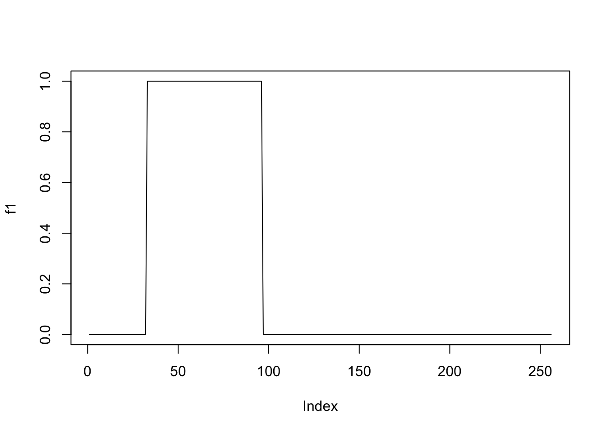
plot(f2,type='l')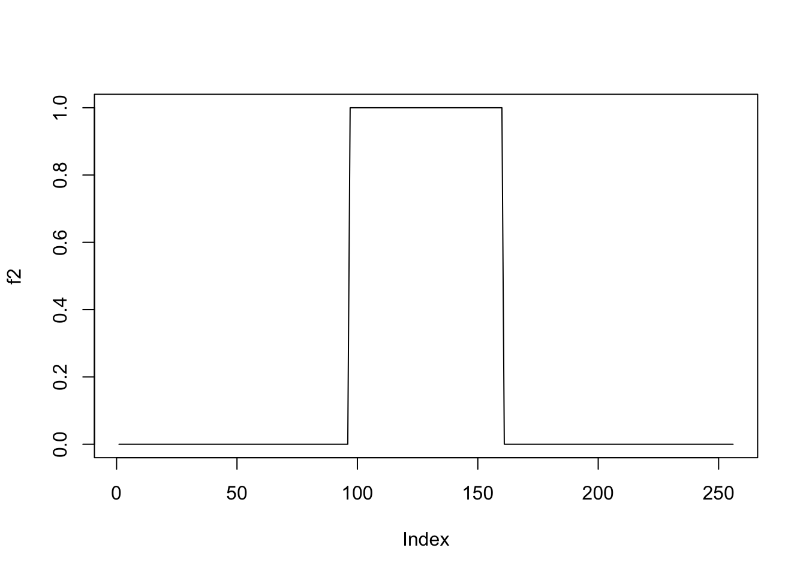
plot(f3,type='l')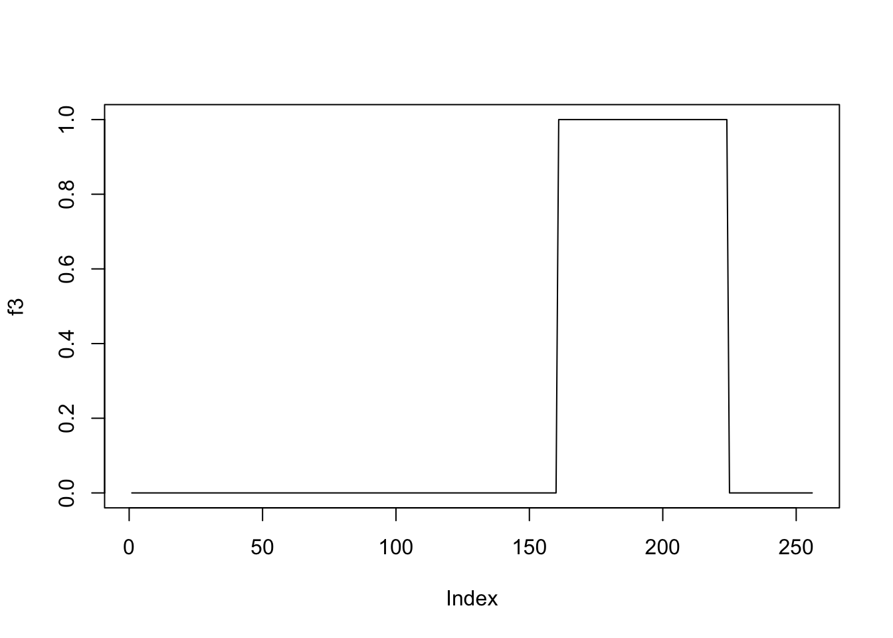
M = n / 3 * u_1 %*% t(f1) +
n / 5 * u_2 %*% t(f2) +
n / 6 * u_3 %*% t(f3)
v = var(c(M))/snr
X = M + matrix(rnorm(n*p,0,sqrt(v)),nrow=n,ncol=p)First fit flash as baseline
library(flashr)
fit.flash = flash(X,var_type='constant')Fitting factor/loading 1 (stop when difference in obj. is < 1.00e-02): Iteration Objective Obj Diff 1 -25062.76 Inf 2 -25060.49 2.27e+00 3 -25060.49 3.93e-03Performing nullcheck... Deleting factor 1 decreases objective by 2.21e+03. Factor retained. Nullcheck complete. Objective: -25060.49Fitting factor/loading 2 (stop when difference in obj. is < 1.00e-02): Iteration Objective Obj Diff 1 -24123.63 Inf 2 -24119.47 4.16e+00 3 -24119.33 1.38e-01 4 -24119.32 7.29e-03Performing nullcheck... Deleting factor 2 decreases objective by 9.41e+02. Factor retained. Nullcheck complete. Objective: -24119.32Fitting factor/loading 3 (stop when difference in obj. is < 1.00e-02): Iteration Objective Obj Diff 1 -23307.99 Inf 2 -23305.42 2.58e+00 3 -23305.41 6.30e-03Performing nullcheck... Deleting factor 3 decreases objective by 8.14e+02. Factor retained. Nullcheck complete. Objective: -23305.41Fitting factor/loading 4 (stop when difference in obj. is < 1.00e-02): Iteration Objective Obj Diff 1 -23335.07 Inf 2 -23326.57 8.50e+00 3 -23325.95 6.21e-01 4 -23325.81 1.41e-01 5 -23325.76 5.10e-02 6 -23325.73 2.39e-02 7 -23325.72 1.33e-02 8 -23325.71 8.41e-03Performing nullcheck... Deleting factor 4 increases objective by 2.03e+01. Factor zeroed out. Nullcheck complete. Objective: -23305.41plot(fit.flash$ldf$f[,1],type='l')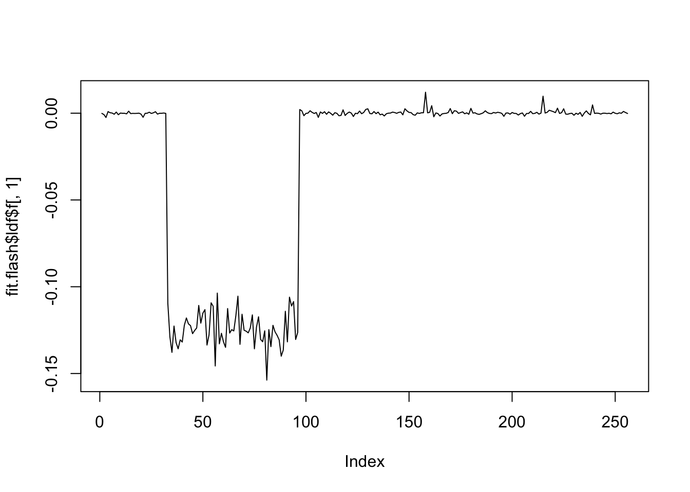
plot(fit.flash$ldf$f[,2],type='l')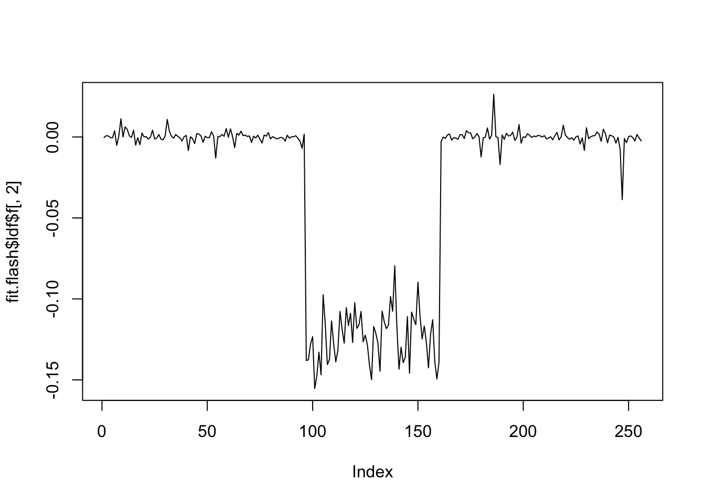
plot(fit.flash$ldf$f[,3],type='l')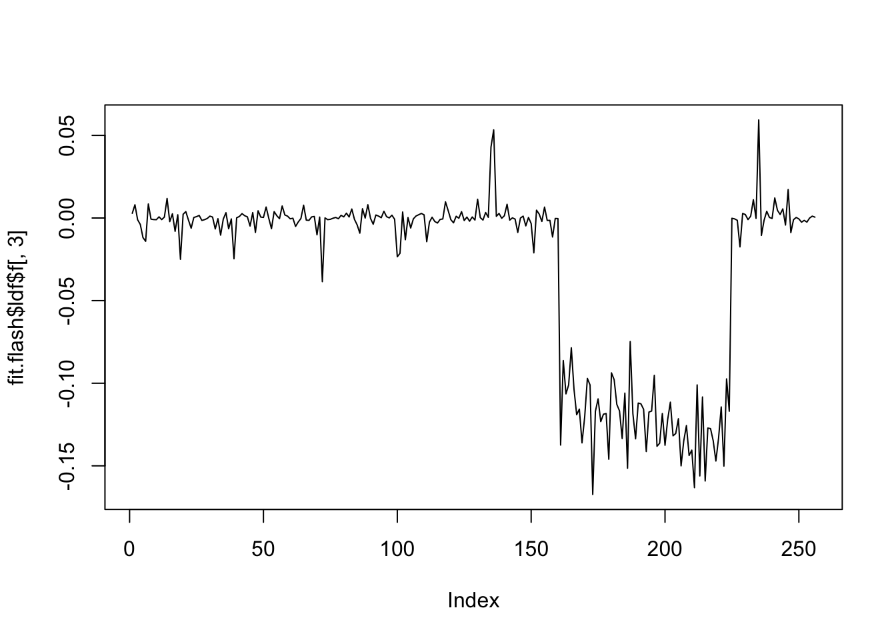
Then fit smooth_flash. Haar wavelet, DWT.
library(funflash)
fit.smooth_flash = smooth_flash(X,var_type = 'constant')Fitting factor/loading 1 (stop when difference in obj. is < 1.00e-02): Iteration Objective Obj Diff 1 -24783.70 Inf 2 -24782.01 1.69e+00 3 -24781.99 1.71e-02 4 -24781.99 1.01e-03Performing nullcheck... Deleting factor 1 decreases objective by 2.49e+03. Factor retained. Nullcheck complete. Objective: -24781.99Fitting factor/loading 2 (stop when difference in obj. is < 1.00e-02): Iteration Objective Obj Diff 1 -23604.66 Inf 2 -23601.01 3.65e+00 3 -23600.10 9.13e-01 4 -23599.54 5.59e-01 5 -23599.40 1.38e-01 6 -23599.38 2.54e-02 7 -23599.37 4.30e-03Performing nullcheck... Deleting factor 2 decreases objective by 1.18e+03. Factor retained. Nullcheck complete. Objective: -23599.37Fitting factor/loading 3 (stop when difference in obj. is < 1.00e-02): Iteration Objective Obj Diff 1 -22565.51 Inf 2 -22561.20 4.31e+00 3 -22561.17 2.91e-02 4 -22561.17 2.27e-05Performing nullcheck... Deleting factor 3 decreases objective by 1.04e+03. Factor retained. Nullcheck complete. Objective: -22561.17Fitting factor/loading 4 (stop when difference in obj. is < 1.00e-02): Iteration Objective Obj Diff 1 -22586.35 Inf 2 -22578.56 7.79e+00 3 -22578.07 4.83e-01 4 -22577.92 1.48e-01 5 -22577.77 1.54e-01 6 -22577.53 2.43e-01 7 -22577.12 4.06e-01 8 -22576.46 6.61e-01 9 -22575.47 9.86e-01 10 -22574.17 1.31e+00 11 -22572.35 1.82e+00 12 -22570.16 2.19e+00 13 -22568.75 1.42e+00 14 -22568.23 5.11e-01 15 -22567.88 3.50e-01 16 -22567.47 4.17e-01 17 -22566.88 5.88e-01 18 -22566.21 6.74e-01 19 -22565.90 3.05e-01 20 -22565.77 1.30e-01 21 -22565.67 9.68e-02 22 -22565.58 9.17e-02 23 -22565.49 9.32e-02 24 -22565.40 8.87e-02 25 -22565.32 8.41e-02 26 -22565.20 1.16e-01 27 -22564.94 2.63e-01 28 -22564.41 5.24e-01 29 -22564.11 3.03e-01 30 -22564.07 4.44e-02 31 -22564.06 9.40e-03Performing nullcheck... Deleting factor 4 increases objective by 2.89e+00. Factor zeroed out. Nullcheck complete. Objective: -22561.17plot(fit.smooth_flash$ldf$f[,1],type='l')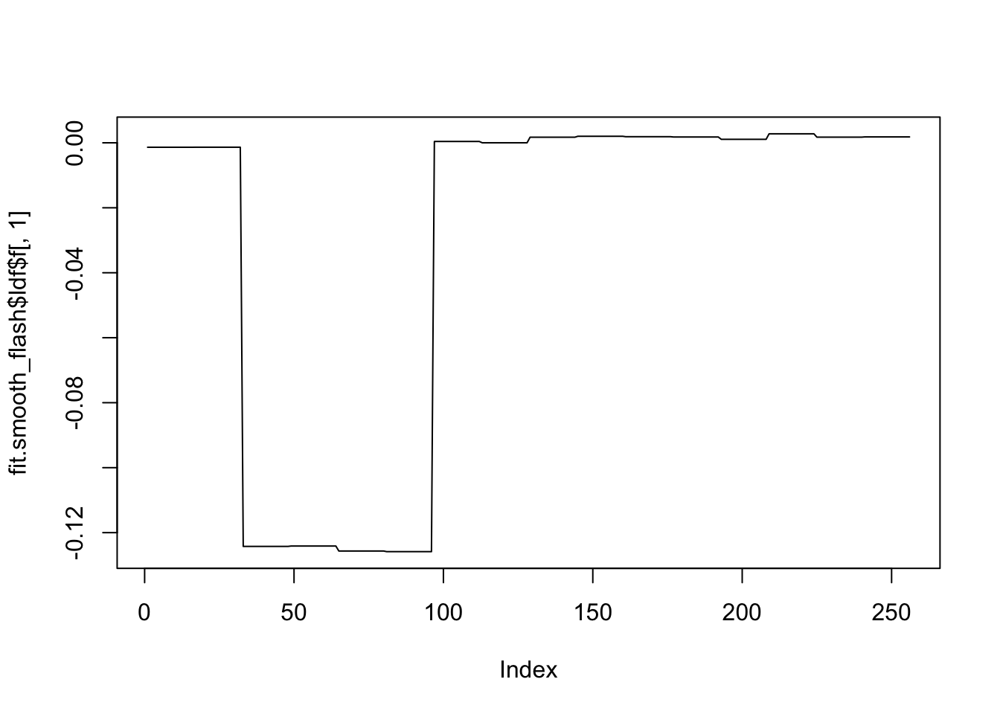
plot(fit.smooth_flash$ldf$f[,2],type='l')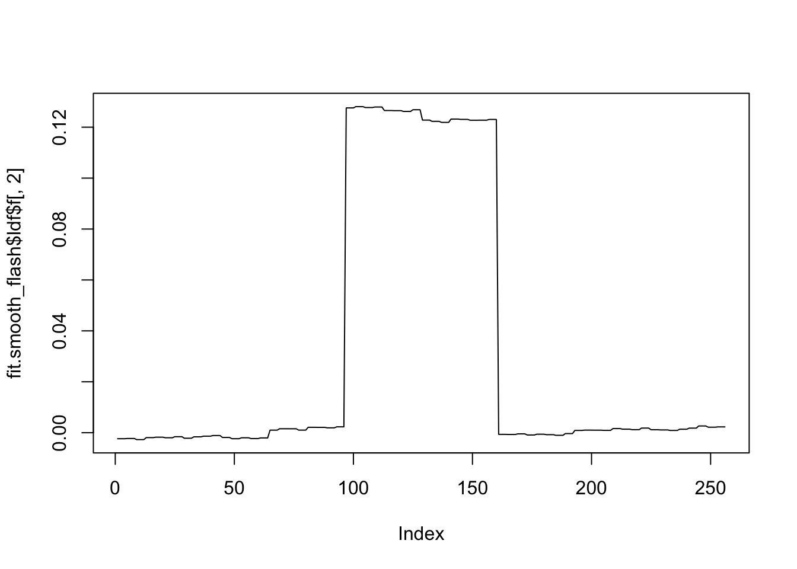
plot(fit.smooth_flash$ldf$f[,3],type='l')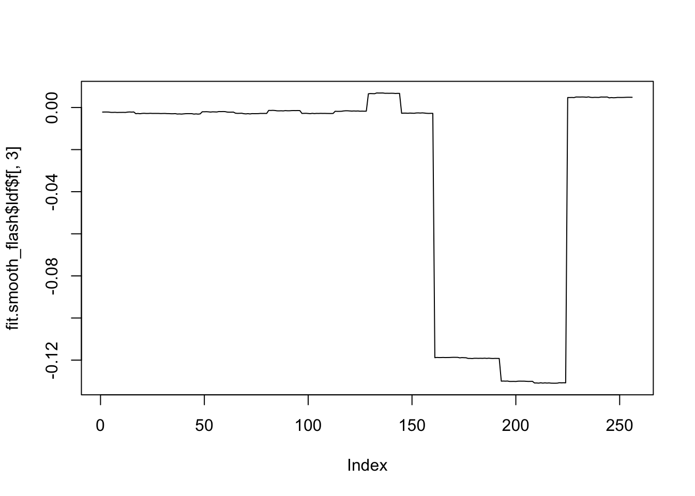
Now DWT funflash.
datax = funflash_set_data(X,reflect.data = FALSE,type='wavelet')
fit.dwt = funflash(datax,var.type = 'constant')[1] "Fitting dimension 1"
[1] "Iteration 1 : obj -23950.971"
[1] "Iteration 2 : obj -23948.958"
[1] "Iteration 3 : obj -23948.958"
[1] "Performing nullcheck"
[1] "Deleting factor 1 decreases objective by 2319.822"
[1] "Fitting dimension 2"
[1] "Iteration 1 : obj -22788.057"
[1] "Iteration 2 : obj -22784.019"
[1] "Iteration 3 : obj -22784.013"
[1] "Performing nullcheck"
[1] "Deleting factor 2 decreases objective by 1164.945"
[1] "Fitting dimension 3"
[1] "Iteration 1 : obj -22466.143"
[1] "Iteration 2 : obj -22458.425"
[1] "Iteration 3 : obj -22458.378"
[1] "Iteration 4 : obj -22458.377"
[1] "Performing nullcheck"
[1] "Deleting factor 3 decreases objective by 325.636"
[1] "Fitting dimension 4"
[1] "Iteration 1 : obj -22483.151"
[1] "Iteration 2 : obj -22475.424"
[1] "Iteration 3 : obj -22474.966"
[1] "Iteration 4 : obj -22474.858"
[1] "Iteration 5 : obj -22474.799"
[1] "Iteration 6 : obj -22474.75"
[1] "Iteration 7 : obj -22474.704"
[1] "Iteration 8 : obj -22474.657"
[1] "Iteration 9 : obj -22474.608"
[1] "Iteration 10 : obj -22474.554"
[1] "Iteration 11 : obj -22474.494"
[1] "Iteration 12 : obj -22474.427"
[1] "Iteration 13 : obj -22474.35"
[1] "Iteration 14 : obj -22474.262"
[1] "Iteration 15 : obj -22474.159"
[1] "Iteration 16 : obj -22474.037"
[1] "Iteration 17 : obj -22473.89"
[1] "Iteration 18 : obj -22473.708"
[1] "Iteration 19 : obj -22473.475"
[1] "Iteration 20 : obj -22473.163"
[1] "Iteration 21 : obj -22472.728"
[1] "Iteration 22 : obj -22472.173"
[1] "Iteration 23 : obj -22471.494"
[1] "Iteration 24 : obj -22468.783"
[1] "Iteration 25 : obj -22465.491"
[1] "Iteration 26 : obj -22464.863"
[1] "Iteration 27 : obj -22462.601"
[1] "Iteration 28 : obj -22462.197"
[1] "Iteration 29 : obj -22462.014"
[1] "Iteration 30 : obj -22461.889"
[1] "Iteration 31 : obj -22461.744"
[1] "Iteration 32 : obj -22461.573"
[1] "Iteration 33 : obj -22461.429"
[1] "Iteration 34 : obj -22461.346"
[1] "Iteration 35 : obj -22461.305"
[1] "Iteration 36 : obj -22461.287"
[1] "Iteration 37 : obj -22461.278"
[1] "Performing nullcheck"
[1] "Deleting factor 4 increases objective by 2.901"fit.dwt$nfactors[1] 3plot(fit.dwt$ldf$f[,1],type='l')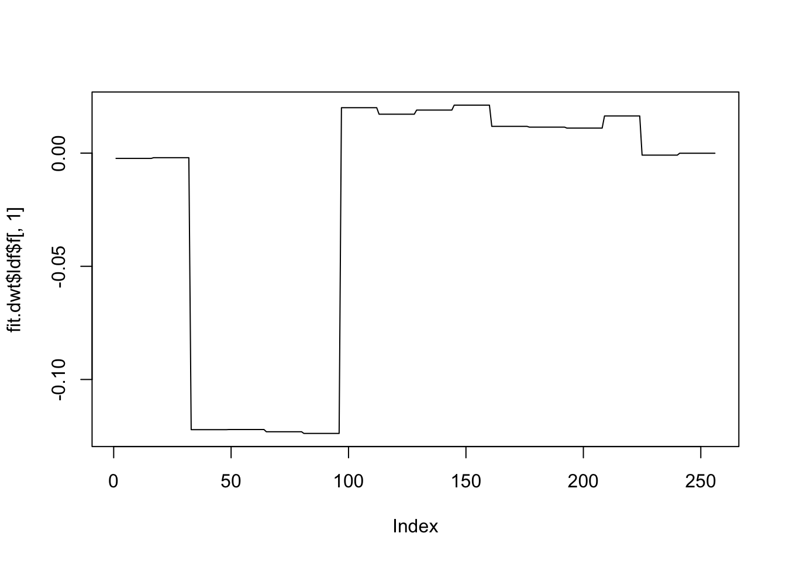
plot(fit.dwt$ldf$f[,2],type='l')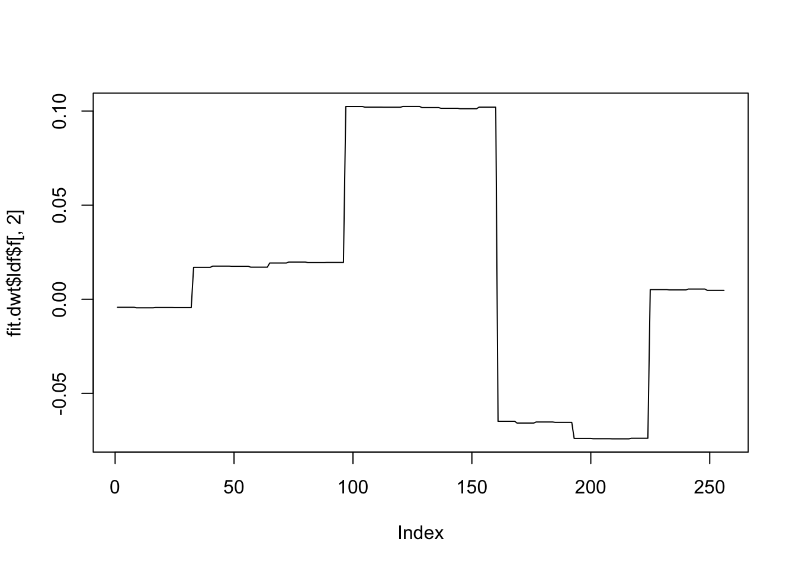
plot(fit.dwt$ldf$f[,3],type='l')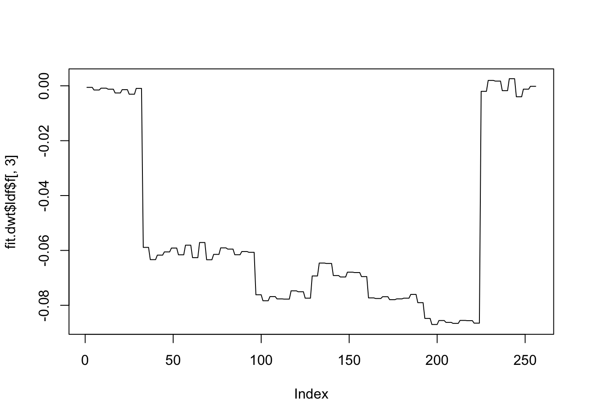
Now NDWT funflash.
datax = funflash_set_data(X,reflect.data = FALSE,type='station')
fit.ndwt = funflash(datax,var.type = 'constant')[1] "Fitting dimension 1"
[1] "Iteration 1 : obj -264122.596"
[1] "Iteration 2 : obj -264116.019"
[1] "Iteration 3 : obj -264115.895"
[1] "Iteration 4 : obj -264115.879"
[1] "Iteration 5 : obj -264115.877"
[1] "Performing nullcheck"
[1] "Deleting factor 1 decreases objective by 50831.67"
[1] "Fitting dimension 2"
[1] "Iteration 1 : obj -212286.49"
[1] "Iteration 2 : obj -212277.643"
[1] "Iteration 3 : obj -212277.579"
[1] "Iteration 4 : obj -212277.574"
[1] "Performing nullcheck"
[1] "Deleting factor 2 decreases objective by 51838.302"
[1] "Fitting dimension 3"
[1] "Iteration 1 : obj -177725.355"
[1] "Iteration 2 : obj -177711.544"
[1] "Iteration 3 : obj -177711.537"
[1] "Performing nullcheck"
[1] "Deleting factor 3 decreases objective by 34566.037"
[1] "Fitting dimension 4"
[1] "Iteration 1 : obj -176534.481"
[1] "Iteration 2 : obj -176514.327"
[1] "Iteration 3 : obj -176510.312"
[1] "Iteration 4 : obj -176506.987"
[1] "Iteration 5 : obj -176503.959"
[1] "Iteration 6 : obj -176501.553"
[1] "Iteration 7 : obj -176498.256"
[1] "Iteration 8 : obj -176495.575"
[1] "Iteration 9 : obj -176493.333"
[1] "Iteration 10 : obj -176491.447"
[1] "Iteration 11 : obj -176489.878"
[1] "Iteration 12 : obj -176488.6"
[1] "Iteration 13 : obj -176487.574"
[1] "Iteration 14 : obj -176486.737"
[1] "Iteration 15 : obj -176486.014"
[1] "Iteration 16 : obj -176485.367"
[1] "Iteration 17 : obj -176484.772"
[1] "Iteration 18 : obj -176484.218"
[1] "Iteration 19 : obj -176483.699"
[1] "Iteration 20 : obj -176483.212"
[1] "Iteration 21 : obj -176482.756"
[1] "Iteration 22 : obj -176482.33"
[1] "Iteration 23 : obj -176481.931"
[1] "Iteration 24 : obj -176481.558"
[1] "Iteration 25 : obj -176481.211"
[1] "Iteration 26 : obj -176480.888"
[1] "Iteration 27 : obj -176480.59"
[1] "Iteration 28 : obj -176480.314"
[1] "Iteration 29 : obj -176480.06"
[1] "Iteration 30 : obj -176479.827"
[1] "Iteration 31 : obj -176479.613"
[1] "Iteration 32 : obj -176479.422"
[1] "Iteration 33 : obj -176479.26"
[1] "Iteration 34 : obj -176479.126"
[1] "Iteration 35 : obj -176479.014"
[1] "Iteration 36 : obj -176478.921"
[1] "Iteration 37 : obj -176478.845"
[1] "Iteration 38 : obj -176478.821"
[1] "Iteration 39 : obj -176478.77"
[1] "Iteration 40 : obj -176478.724"
[1] "Iteration 41 : obj -176478.685"
[1] "Iteration 42 : obj -176478.652"
[1] "Iteration 43 : obj -176478.624"
[1] "Iteration 44 : obj -176478.601"
[1] "Iteration 45 : obj -176478.549"
[1] "Iteration 46 : obj -176478.536"
[1] "Iteration 47 : obj -176478.527"
[1] "Performing nullcheck"
[1] "Deleting factor 4 decreases objective by 1233.01"
[1] "Fitting dimension 5"
[1] "Iteration 1 : obj -175409.402"
[1] "Iteration 2 : obj -175388.973"
[1] "Iteration 3 : obj -175387.878"
[1] "Iteration 4 : obj -175387.591"
[1] "Iteration 5 : obj -175387.469"
[1] "Iteration 6 : obj -175387.406"
[1] "Iteration 7 : obj -175387.369"
[1] "Iteration 8 : obj -175387.344"
[1] "Iteration 9 : obj -175387.327"
[1] "Iteration 10 : obj -175387.314"
[1] "Iteration 11 : obj -175387.304"
[1] "Iteration 12 : obj -175387.295"
[1] "Performing nullcheck"
[1] "Deleting factor 5 decreases objective by 1091.231"
[1] "Fitting dimension 6"
[1] "Iteration 1 : obj -174410.46"
[1] "Iteration 2 : obj -174390.548"
[1] "Iteration 3 : obj -174388.968"
[1] "Iteration 4 : obj -174388.412"
[1] "Iteration 5 : obj -174388.152"
[1] "Iteration 6 : obj -174388.012"
[1] "Iteration 7 : obj -174387.93"
[1] "Iteration 8 : obj -174387.881"
[1] "Iteration 9 : obj -174387.85"
[1] "Iteration 10 : obj -174387.83"
[1] "Iteration 11 : obj -174387.817"
[1] "Iteration 12 : obj -174387.809"
[1] "Performing nullcheck"
[1] "Deleting factor 6 decreases objective by 999.486"
[1] "Fitting dimension 7"
[1] "Iteration 1 : obj -173721.395"
[1] "Iteration 2 : obj -173689.535"
[1] "Iteration 3 : obj -173683.532"
[1] "Iteration 4 : obj -173680.871"
[1] "Iteration 5 : obj -173679.48"
[1] "Iteration 6 : obj -173678.676"
[1] "Iteration 7 : obj -173678.18"
[1] "Iteration 8 : obj -173677.862"
[1] "Iteration 9 : obj -173677.652"
[1] "Iteration 10 : obj -173677.513"
[1] "Iteration 11 : obj -173677.419"
[1] "Iteration 12 : obj -173677.356"
[1] "Iteration 13 : obj -173677.313"
[1] "Iteration 14 : obj -173677.284"
[1] "Iteration 15 : obj -173677.264"
[1] "Iteration 16 : obj -173677.25"
[1] "Iteration 17 : obj -173677.241"
[1] "Performing nullcheck"
[1] "Deleting factor 7 decreases objective by 710.568"
[1] "Fitting dimension 8"
[1] "Iteration 1 : obj -173219.016"
[1] "Iteration 2 : obj -173192.116"
[1] "Iteration 3 : obj -173186.701"
[1] "Iteration 4 : obj -173183.651"
[1] "Iteration 5 : obj -173181.886"
[1] "Iteration 6 : obj -173180.827"
[1] "Iteration 7 : obj -173180.164"
[1] "Iteration 8 : obj -173179.732"
[1] "Iteration 9 : obj -173179.439"
[1] "Iteration 10 : obj -173179.232"
[1] "Iteration 11 : obj -173179.078"
[1] "Iteration 12 : obj -173178.958"
[1] "Iteration 13 : obj -173178.858"
[1] "Iteration 14 : obj -173178.772"
[1] "Iteration 15 : obj -173178.693"
[1] "Iteration 16 : obj -173178.618"
[1] "Iteration 17 : obj -173178.544"
[1] "Iteration 18 : obj -173178.469"
[1] "Iteration 19 : obj -173178.393"
[1] "Iteration 20 : obj -173178.315"
[1] "Iteration 21 : obj -173178.235"
[1] "Iteration 22 : obj -173178.152"
[1] "Iteration 23 : obj -173178.067"
[1] "Iteration 24 : obj -173177.978"
[1] "Iteration 25 : obj -173177.876"
[1] "Iteration 26 : obj -173177.754"
[1] "Iteration 27 : obj -173177.609"
[1] "Iteration 28 : obj -173177.437"
[1] "Iteration 29 : obj -173177.236"
[1] "Iteration 30 : obj -173177.004"
[1] "Iteration 31 : obj -173176.741"
[1] "Iteration 32 : obj -173176.45"
[1] "Iteration 33 : obj -173176.133"
[1] "Iteration 34 : obj -173175.798"
[1] "Iteration 35 : obj -173175.449"
[1] "Iteration 36 : obj -173175.097"
[1] "Iteration 37 : obj -173174.749"
[1] "Iteration 38 : obj -173174.413"
[1] "Iteration 39 : obj -173174.096"
[1] "Iteration 40 : obj -173173.802"
[1] "Iteration 41 : obj -173173.535"
[1] "Iteration 42 : obj -173173.287"
[1] "Iteration 43 : obj -173173.054"
[1] "Iteration 44 : obj -173172.835"
[1] "Iteration 45 : obj -173172.63"
[1] "Iteration 46 : obj -173172.437"
[1] "Iteration 47 : obj -173172.255"
[1] "Iteration 48 : obj -173172.082"
[1] "Iteration 49 : obj -173171.917"
[1] "Iteration 50 : obj -173171.761"
[1] "Iteration 51 : obj -173171.615"
[1] "Iteration 52 : obj -173171.483"
[1] "Iteration 53 : obj -173171.368"
[1] "Iteration 54 : obj -173171.272"
[1] "Iteration 55 : obj -173171.195"
[1] "Iteration 56 : obj -173171.135"
[1] "Iteration 57 : obj -173171.09"
[1] "Iteration 58 : obj -173171.057"
[1] "Iteration 59 : obj -173171.033"
[1] "Iteration 60 : obj -173171.016"
[1] "Iteration 61 : obj -173171.003"
[1] "Iteration 62 : obj -173170.994"
[1] "Performing nullcheck"
[1] "Deleting factor 8 decreases objective by 506.247"
[1] "Fitting dimension 9"
[1] "Iteration 1 : obj -172723"
[1] "Iteration 2 : obj -172703.147"
[1] "Iteration 3 : obj -172699.764"
[1] "Iteration 4 : obj -172697.873"
[1] "Iteration 5 : obj -172696.569"
[1] "Iteration 6 : obj -172695.541"
[1] "Iteration 7 : obj -172694.718"
[1] "Iteration 8 : obj -172694.381"
[1] "Iteration 9 : obj -172693.605"
[1] "Iteration 10 : obj -172693.016"
[1] "Iteration 11 : obj -172692.575"
[1] "Iteration 12 : obj -172692.23"
[1] "Iteration 13 : obj -172691.951"
[1] "Iteration 14 : obj -172691.722"
[1] "Iteration 15 : obj -172691.529"
[1] "Iteration 16 : obj -172691.367"
[1] "Iteration 17 : obj -172691.23"
[1] "Iteration 18 : obj -172691.112"
[1] "Iteration 19 : obj -172691.012"
[1] "Iteration 20 : obj -172690.926"
[1] "Iteration 21 : obj -172690.853"
[1] "Iteration 22 : obj -172690.79"
[1] "Iteration 23 : obj -172690.737"
[1] "Iteration 24 : obj -172690.691"
[1] "Iteration 25 : obj -172690.651"
[1] "Iteration 26 : obj -172690.618"
[1] "Iteration 27 : obj -172690.589"
[1] "Iteration 28 : obj -172690.564"
[1] "Iteration 29 : obj -172690.543"
[1] "Iteration 30 : obj -172690.525"
[1] "Iteration 31 : obj -172690.51"
[1] "Iteration 32 : obj -172690.497"
[1] "Iteration 33 : obj -172690.486"
[1] "Iteration 34 : obj -172690.477"
[1] "Performing nullcheck"
[1] "Deleting factor 9 decreases objective by 480.518"
[1] "Fitting dimension 10"
[1] "Iteration 1 : obj -172301.63"
[1] "Iteration 2 : obj -172276.725"
[1] "Iteration 3 : obj -172271.721"
[1] "Iteration 4 : obj -172268.676"
[1] "Iteration 5 : obj -172266.516"
[1] "Iteration 6 : obj -172265.182"
[1] "Iteration 7 : obj -172263.538"
[1] "Iteration 8 : obj -172262.514"
[1] "Iteration 9 : obj -172261.862"
[1] "Iteration 10 : obj -172261.444"
[1] "Iteration 11 : obj -172261.183"
[1] "Iteration 12 : obj -172261.015"
[1] "Iteration 13 : obj -172260.905"
[1] "Iteration 14 : obj -172260.831"
[1] "Iteration 15 : obj -172260.781"
[1] "Iteration 16 : obj -172260.747"
[1] "Iteration 17 : obj -172260.724"
[1] "Iteration 18 : obj -172260.707"
[1] "Iteration 19 : obj -172260.696"
[1] "Iteration 20 : obj -172260.688"
[1] "Performing nullcheck"
[1] "Deleting factor 10 decreases objective by 429.789"fit.ndwt$nfactors[1] 10plot(fit.ndwt$ldf$f[,1],type='l')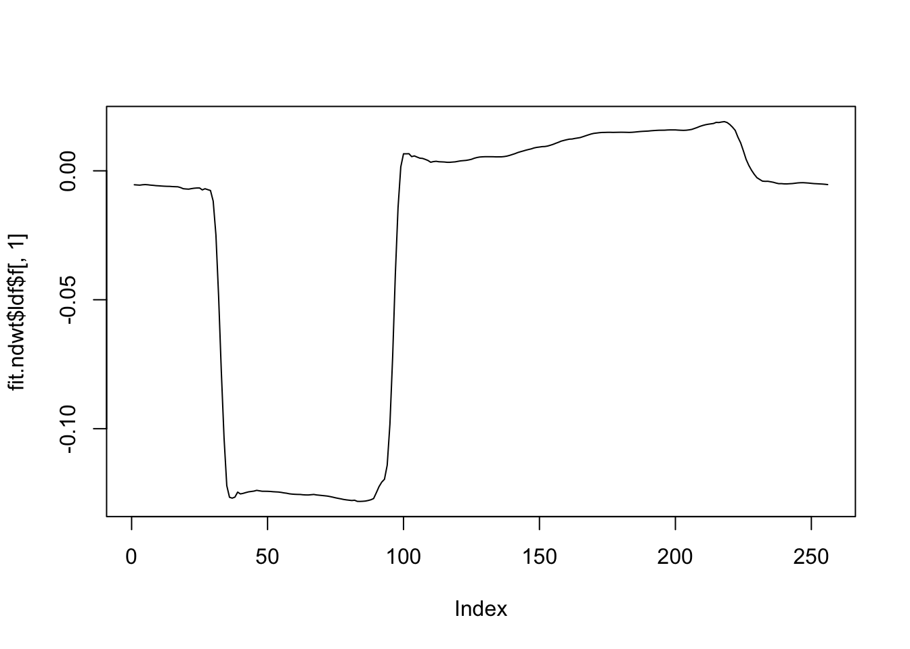
plot(fit.ndwt$ldf$f[,2],type='l')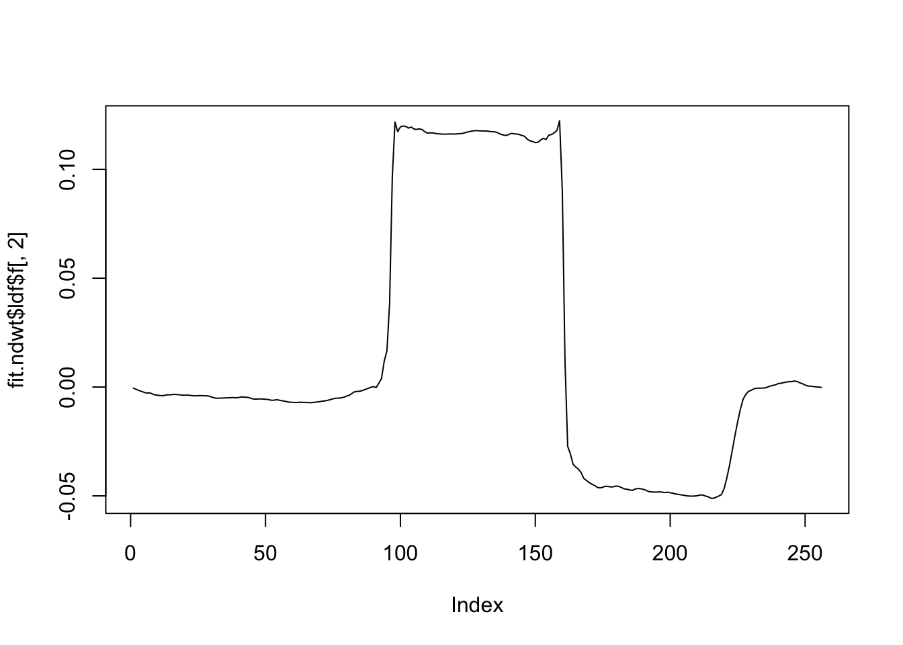
plot(fit.ndwt$ldf$f[,3],type='l')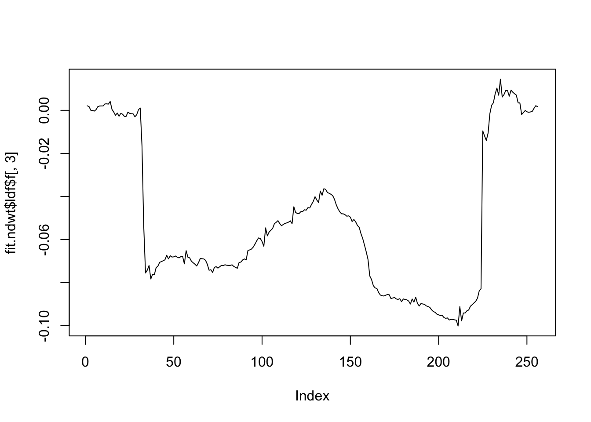
plot(fit.ndwt$ldf$f[,4],type='l')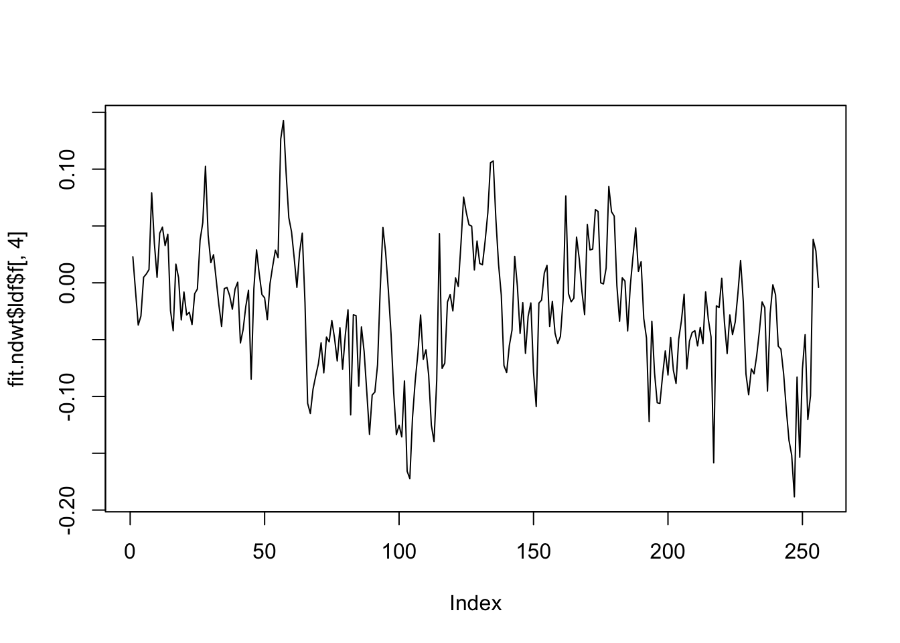
plot(fit.ndwt$ldf$f[,5],type='l')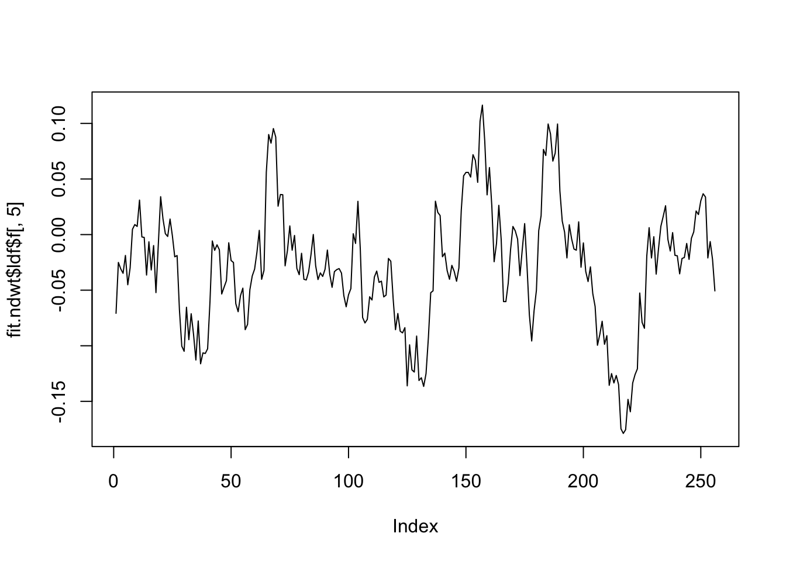
plot(fit.ndwt$ldf$f[,6],type='l')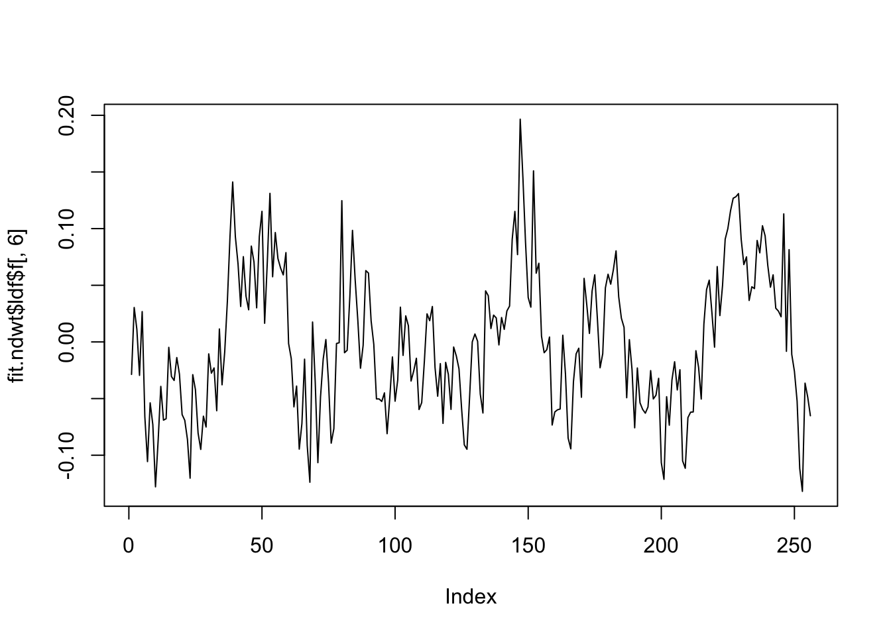
Now create an example that needs extending the data.
set.seed(12345)
n <- 50
p <- 8*4*10
K <- 3
snr <- 1
## Step 1: sample U, an orthogonal matrix
rand_semdef_sym_mat <- crossprod(matrix(runif(n * n), n, n))
rand_ortho_mat <- eigen(rand_semdef_sym_mat)$vector[, 1:K]
u_1 <- rand_ortho_mat[, 1]
u_2 <- rand_ortho_mat[, 2]
u_3 <- rand_ortho_mat[, 3]
f1 = c(rep(0,p/8), rep(1, p/4), rep(0, p/4), rep(0, p/4),rep(0,p/8))
f2 = c(rep(0,p/8), rep(0, p/4), rep(1, p/4), rep(0, p/4),rep(0,p/8))
f3 = c(rep(0,p/8), rep(0, p/4), rep(0, p/4), rep(1, p/4),rep(0,p/8))
L = cbind(u_1,u_2,u_3)
FF=cbind(f1,f2,f3)
plot(f1,type='l')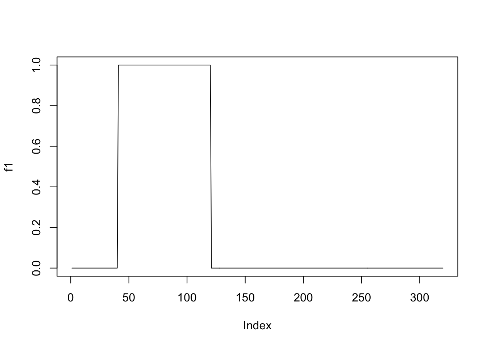
plot(f2,type='l')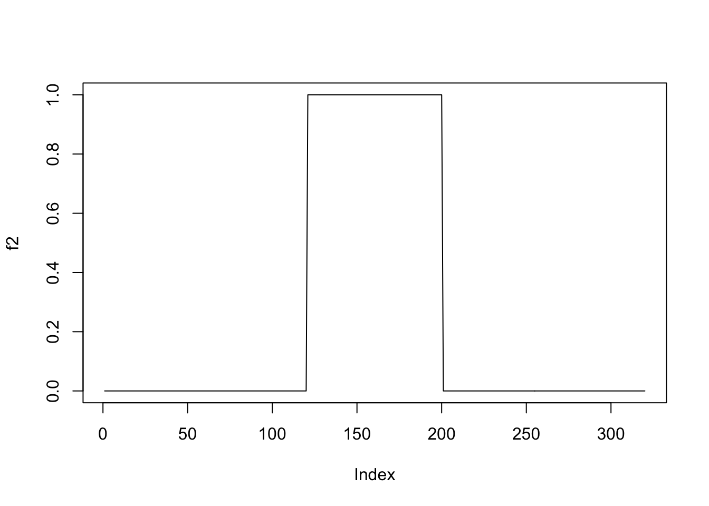
plot(f3,type='l')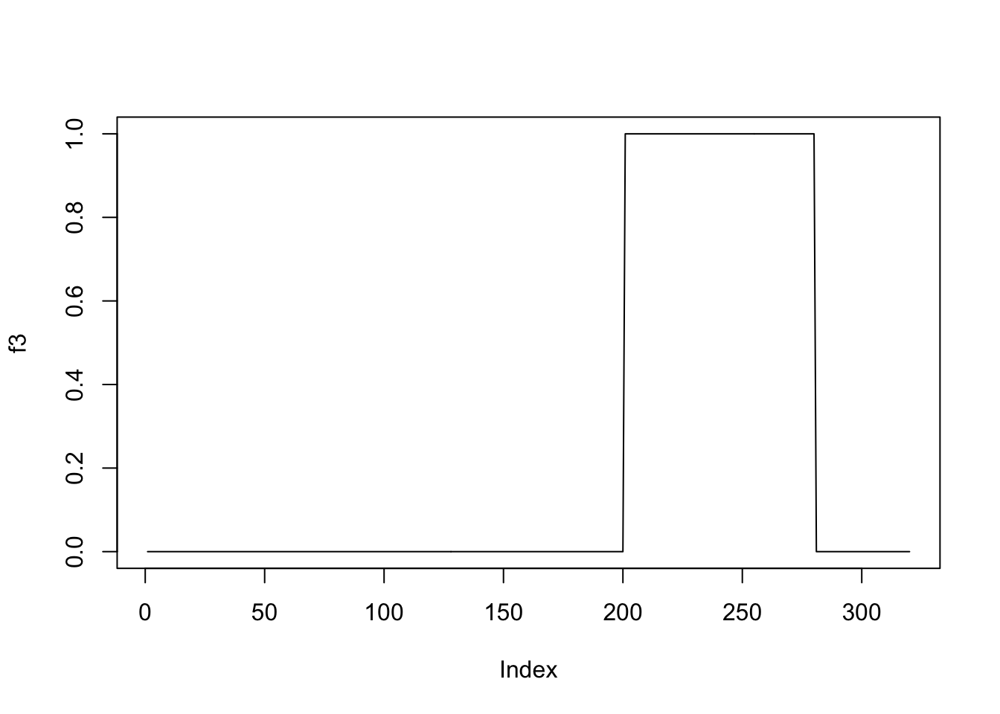
M = n / 3 * u_1 %*% t(f1) +
n / 5 * u_2 %*% t(f2) +
n / 6 * u_3 %*% t(f3)
v = var(c(M))/snr
X = M + matrix(rnorm(n*p,0,sqrt(v)),nrow=n,ncol=p)extend the data
X.e = funflash:::reflect(X,F)First fit flash as baseline
idx = X.e$idx
fit.flash = flash(X.e$x,var_type='constant')Fitting factor/loading 1 (stop when difference in obj. is < 1.00e-02): Iteration Objective Obj Diff 1 -49049.41 Inf 2 -49046.85 2.57e+00 3 -49046.85 1.94e-03Performing nullcheck... Deleting factor 1 decreases objective by 5.12e+03. Factor retained. Nullcheck complete. Objective: -49046.85Fitting factor/loading 2 (stop when difference in obj. is < 1.00e-02): Iteration Objective Obj Diff 1 -47577.68 Inf 2 -47573.44 4.25e+00 3 -47573.37 6.54e-02 4 -47573.37 6.44e-03Performing nullcheck... Deleting factor 2 decreases objective by 1.47e+03. Factor retained. Nullcheck complete. Objective: -47573.37Fitting factor/loading 3 (stop when difference in obj. is < 1.00e-02): Iteration Objective Obj Diff 1 -46089.57 Inf 2 -46083.91 5.66e+00 3 -46083.90 1.03e-02 4 -46083.90 5.88e-05Performing nullcheck... Deleting factor 3 decreases objective by 1.49e+03. Factor retained. Nullcheck complete. Objective: -46083.9Fitting factor/loading 4 (stop when difference in obj. is < 1.00e-02): Iteration Objective Obj Diff 1 -46105.16 Inf 2 -46095.15 1.00e+01 3 -46094.73 4.15e-01 4 -46094.47 2.59e-01 5 -46094.16 3.11e-01 6 -46093.79 3.70e-01 7 -46093.37 4.21e-01 8 -46092.91 4.58e-01 9 -46092.43 4.80e-01 10 -46091.94 4.92e-01 11 -46091.44 5.02e-01 12 -46090.93 5.14e-01 13 -46090.40 5.28e-01 14 -46089.86 5.40e-01 15 -46089.31 5.44e-01 16 -46088.77 5.47e-01 17 -46088.20 5.64e-01 18 -46087.60 6.05e-01 19 -46086.93 6.70e-01 20 -46086.17 7.57e-01 21 -46085.27 8.97e-01 22 -46084.11 1.17e+00 23 -46082.50 1.61e+00 24 -46080.33 2.17e+00 25 -46077.84 2.49e+00 26 -46075.78 2.05e+00 27 -46074.48 1.31e+00 28 -46073.74 7.36e-01 29 -46073.50 2.41e-01 30 -46073.45 4.35e-02 31 -46073.45 6.93e-03Performing nullcheck... Deleting factor 4 decreases objective by 1.05e+01. Factor retained. Nullcheck complete. Objective: -46073.45Fitting factor/loading 5 (stop when difference in obj. is < 1.00e-02): Iteration Objective Obj Diff 1 -46094.86 Inf 2 -46084.76 1.01e+01 3 -46084.34 4.19e-01 4 -46084.17 1.68e-01 5 -46084.05 1.25e-01 6 -46083.95 9.76e-02 7 -46083.87 7.73e-02 8 -46083.81 6.27e-02 9 -46083.76 5.26e-02 10 -46083.71 4.60e-02 11 -46083.67 4.20e-02 12 -46083.63 4.00e-02 13 -46083.59 3.96e-02 14 -46083.55 4.04e-02 15 -46083.51 4.23e-02 16 -46083.46 4.51e-02 17 -46083.41 4.89e-02 18 -46083.36 5.35e-02 19 -46083.30 5.91e-02 20 -46083.24 6.57e-02 21 -46083.16 7.33e-02 22 -46083.08 8.20e-02 23 -46082.99 9.18e-02 24 -46082.89 1.03e-01 25 -46082.77 1.15e-01 26 -46082.64 1.28e-01 27 -46082.50 1.42e-01 28 -46082.34 1.57e-01 29 -46082.17 1.73e-01 30 -46081.98 1.90e-01 31 -46081.77 2.10e-01 32 -46081.54 2.33e-01 33 -46081.28 2.59e-01 34 -46080.99 2.88e-01 35 -46080.67 3.17e-01 36 -46080.33 3.44e-01 37 -46079.97 3.65e-01 38 -46079.59 3.76e-01 39 -46079.21 3.77e-01 40 -46078.85 3.67e-01 41 -46078.50 3.48e-01 42 -46078.18 3.22e-01 43 -46077.89 2.88e-01 44 -46077.64 2.48e-01 45 -46077.43 2.05e-01 46 -46077.27 1.63e-01 47 -46077.14 1.28e-01 48 -46077.04 1.01e-01 49 -46076.96 8.18e-02 50 -46076.89 6.83e-02 51 -46076.83 5.87e-02 52 -46076.78 5.20e-02 53 -46076.73 4.74e-02 54 -46076.69 4.45e-02 55 -46076.65 4.30e-02 56 -46076.60 4.28e-02 57 -46076.56 4.41e-02 58 -46076.51 4.67e-02 59 -46076.46 5.06e-02 60 -46076.41 5.59e-02 61 -46076.34 6.24e-02 62 -46076.27 7.05e-02 63 -46076.19 8.05e-02 64 -46076.10 9.36e-02 65 -46075.99 1.12e-01 66 -46075.85 1.39e-01 67 -46075.67 1.83e-01 68 -46075.41 2.54e-01 69 -46075.05 3.67e-01 70 -46074.53 5.17e-01 71 -46073.90 6.25e-01 72 -46073.34 5.63e-01 73 -46072.97 3.74e-01 74 -46072.76 2.05e-01 75 -46072.66 1.04e-01 76 -46072.60 5.31e-02 77 -46072.57 2.96e-02 78 -46072.56 1.87e-02 79 -46072.54 1.34e-02 80 -46072.53 1.07e-02 81 -46072.52 9.03e-03Performing nullcheck... Deleting factor 5 decreases objective by 9.25e-01. Factor retained. Nullcheck complete. Objective: -46072.52Fitting factor/loading 6 (stop when difference in obj. is < 1.00e-02): Iteration Objective Obj Diff 1 -46092.84 Inf 2 -46082.68 1.02e+01 3 -46082.05 6.32e-01 4 -46081.71 3.43e-01 5 -46081.41 3.02e-01 6 -46081.09 3.14e-01 7 -46080.76 3.34e-01 8 -46080.43 3.32e-01 9 -46080.12 3.05e-01 10 -46079.85 2.68e-01 11 -46079.62 2.38e-01 12 -46079.39 2.27e-01 13 -46079.15 2.40e-01 14 -46078.88 2.71e-01 15 -46078.57 3.07e-01 16 -46078.25 3.19e-01 17 -46077.96 2.95e-01 18 -46077.69 2.63e-01 19 -46077.45 2.39e-01 20 -46077.23 2.24e-01 21 -46077.02 2.10e-01 22 -46076.84 1.78e-01 23 -46076.72 1.21e-01 24 -46076.65 6.71e-02 25 -46076.62 3.43e-02 26 -46076.60 1.80e-02 27 -46076.59 9.94e-03Performing nullcheck... Deleting factor 6 increases objective by 4.07e+00. Factor zeroed out. Nullcheck complete. Objective: -46072.52fit.flash$nfactors[1] 5plot(fit.flash$ldf$f[idx,1],type='l')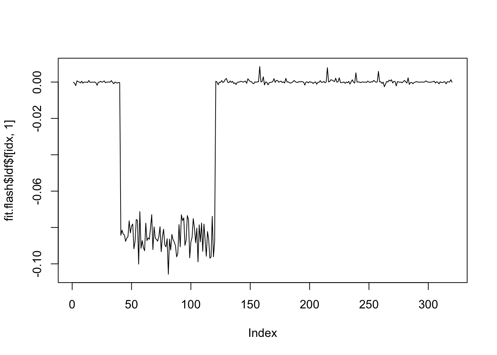
plot(fit.flash$ldf$f[idx,2],type='l')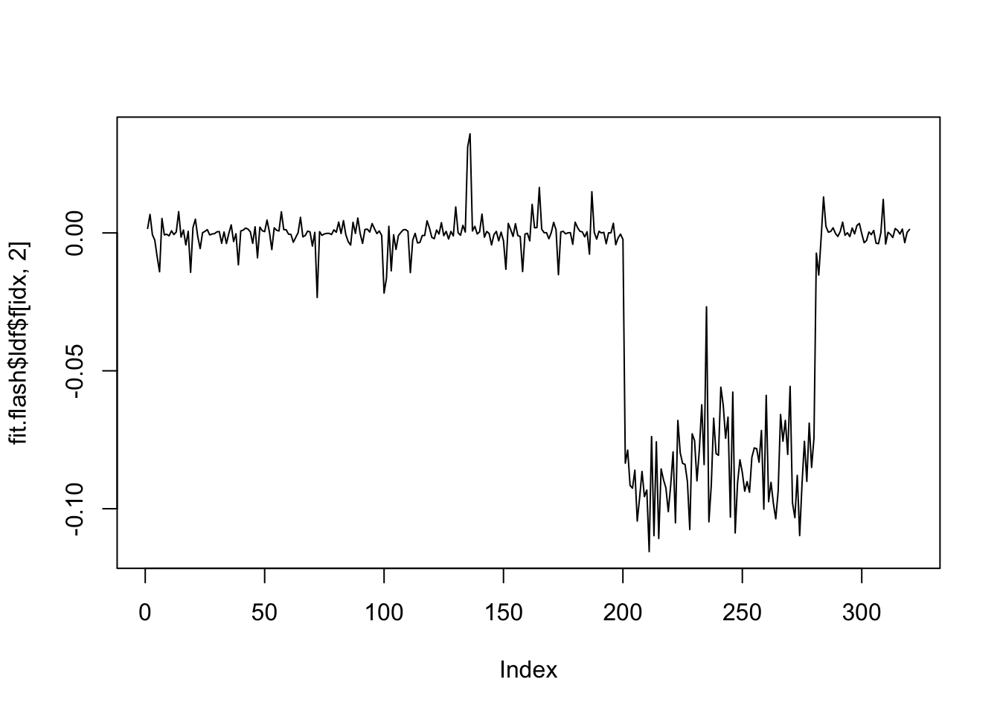
plot(fit.flash$ldf$f[idx,3],type='l')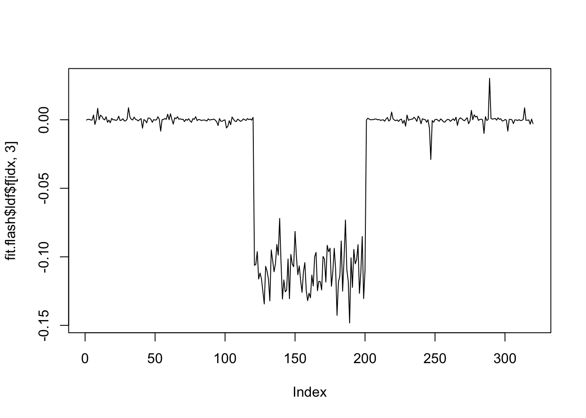
plot(fit.flash$ldf$f[idx,4],type='l')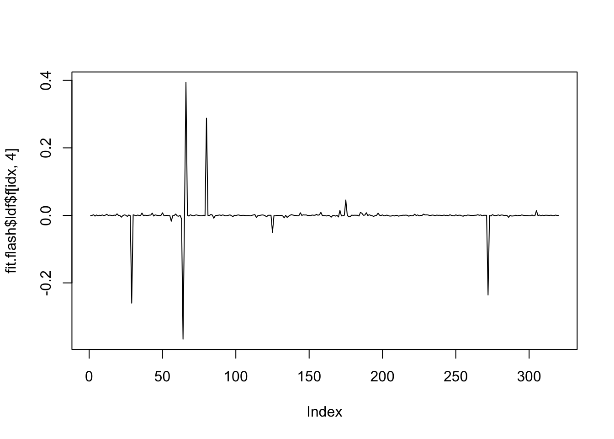
plot(fit.flash$ldf$f[idx,5],type='l')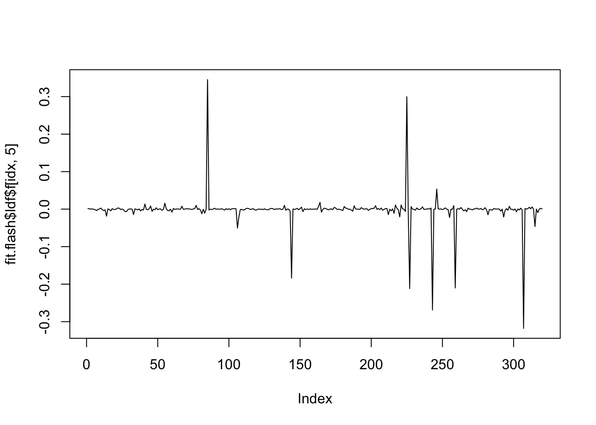
Then fit smooth_flash. Haar wavelet, DWT.
fit.smooth_flash = smooth_flash(X.e$x,var_type = 'constant')Fitting factor/loading 1 (stop when difference in obj. is < 1.00e-02): Iteration Objective Obj Diff 1 -48506.67 Inf 2 -48504.12 2.55e+00 3 -48504.12 5.84e-03Performing nullcheck... Deleting factor 1 decreases objective by 5.66e+03. Factor retained. Nullcheck complete. Objective: -48504.12Fitting factor/loading 2 (stop when difference in obj. is < 1.00e-02): Iteration Objective Obj Diff 1 -46618.39 Inf 2 -46610.96 7.43e+00 3 -46610.66 2.99e-01 4 -46610.53 1.28e-01 5 -46610.48 5.25e-02 6 -46610.46 2.05e-02 7 -46610.45 7.75e-03Performing nullcheck... Deleting factor 2 decreases objective by 1.89e+03. Factor retained. Nullcheck complete. Objective: -46610.45Fitting factor/loading 3 (stop when difference in obj. is < 1.00e-02): Iteration Objective Obj Diff 1 -44820.49 Inf 2 -44812.41 8.08e+00 3 -44812.41 1.01e-03Performing nullcheck... Deleting factor 3 decreases objective by 1.80e+03. Factor retained. Nullcheck complete. Objective: -44812.41Fitting factor/loading 4 (stop when difference in obj. is < 1.00e-02): Iteration Objective Obj Diff 1 -44828.10 Inf 2 -44817.60 1.05e+01 3 -44816.55 1.05e+00 4 -44815.76 7.87e-01 5 -44815.02 7.38e-01 6 -44814.34 6.80e-01 7 -44813.86 4.83e-01 8 -44813.45 4.06e-01 9 -44813.06 3.99e-01 10 -44812.63 4.30e-01 11 -44812.14 4.85e-01 12 -44811.59 5.48e-01 13 -44810.99 6.00e-01 14 -44810.37 6.25e-01 15 -44809.75 6.15e-01 16 -44809.18 5.76e-01 17 -44808.66 5.19e-01 18 -44808.20 4.59e-01 19 -44807.80 4.01e-01 20 -44807.45 3.49e-01 21 -44807.15 3.02e-01 22 -44806.88 2.63e-01 23 -44806.65 2.32e-01 24 -44806.44 2.08e-01 25 -44806.25 1.90e-01 26 -44806.08 1.75e-01 27 -44805.91 1.68e-01 28 -44805.74 1.68e-01 29 -44805.60 1.47e-01 30 -44805.46 1.37e-01 31 -44805.32 1.40e-01 32 -44805.17 1.45e-01 33 -44805.02 1.50e-01 34 -44804.87 1.56e-01 35 -44804.70 1.64e-01 36 -44804.53 1.76e-01 37 -44804.34 1.92e-01 38 -44804.13 2.08e-01 39 -44803.91 2.21e-01 40 -44803.68 2.28e-01 41 -44803.45 2.30e-01 42 -44803.22 2.27e-01 43 -44803.01 2.16e-01 44 -44802.81 1.98e-01 45 -44802.64 1.70e-01 46 -44802.50 1.36e-01 47 -44802.40 9.85e-02 48 -44802.34 6.64e-02 49 -44802.29 4.27e-02 50 -44802.27 2.66e-02 51 -44802.25 1.64e-02 52 -44802.24 1.01e-02 53 -44802.24 6.25e-03Performing nullcheck... Deleting factor 4 decreases objective by 1.02e+01. Factor retained. Nullcheck complete. Objective: -44802.24Fitting factor/loading 5 (stop when difference in obj. is < 1.00e-02): Iteration Objective Obj Diff 1 -44813.18 Inf 2 -44803.02 1.02e+01 3 -44802.29 7.22e-01 4 -44801.95 3.45e-01 5 -44801.69 2.55e-01 6 -44801.47 2.22e-01 7 -44801.27 2.01e-01 8 -44801.09 1.83e-01 9 -44800.92 1.69e-01 10 -44800.76 1.60e-01 11 -44800.61 1.54e-01 12 -44800.46 1.48e-01 13 -44800.32 1.40e-01 14 -44800.19 1.30e-01 15 -44800.07 1.22e-01 16 -44799.95 1.14e-01 17 -44799.85 1.04e-01 18 -44799.76 8.99e-02 19 -44799.68 7.25e-02 20 -44799.63 5.62e-02 21 -44799.59 4.30e-02 22 -44799.55 3.10e-02 23 -44799.53 2.23e-02 24 -44799.52 1.63e-02 25 -44799.50 1.21e-02 26 -44799.49 9.12e-03Performing nullcheck... Deleting factor 5 decreases objective by 2.74e+00. Factor retained. Nullcheck complete. Objective: -44799.49Fitting factor/loading 6 (stop when difference in obj. is < 1.00e-02): Iteration Objective Obj Diff 1 -44813.84 Inf 2 -44799.53 1.43e+01 3 -44797.00 2.53e+00 4 -44795.95 1.05e+00 5 -44795.28 6.70e-01 6 -44794.79 4.91e-01 7 -44794.43 3.62e-01 8 -44794.14 2.87e-01 9 -44793.90 2.46e-01 10 -44793.74 1.62e-01 11 -44793.54 2.01e-01 12 -44793.07 4.69e-01 13 -44792.79 2.76e-01 14 -44792.53 2.62e-01 15 -44792.22 3.06e-01 16 -44791.85 3.73e-01 17 -44791.42 4.34e-01 18 -44790.94 4.72e-01 19 -44790.44 5.04e-01 20 -44789.88 5.58e-01 21 -44789.22 6.64e-01 22 -44788.36 8.61e-01 23 -44787.12 1.24e+00 24 -44785.60 1.52e+00 25 -44782.76 2.84e+00 26 -44782.00 7.60e-01 27 -44781.68 3.20e-01 28 -44781.49 1.87e-01 29 -44781.25 2.45e-01 30 -44780.86 3.83e-01 31 -44780.51 3.54e-01 32 -44780.36 1.47e-01 33 -44780.32 4.53e-02 34 -44780.30 1.54e-02 35 -44780.30 5.73e-03Performing nullcheck... Deleting factor 6 decreases objective by 1.92e+01. Factor retained. Nullcheck complete. Objective: -44780.3Fitting factor/loading 7 (stop when difference in obj. is < 1.00e-02): Iteration Objective Obj Diff 1 -44798.06 Inf 2 -44785.48 1.26e+01 3 -44783.25 2.23e+00 4 -44781.59 1.66e+00 5 -44780.22 1.36e+00 6 -44778.24 1.99e+00 7 -44777.04 1.20e+00 8 -44776.26 7.78e-01 9 -44775.75 5.04e-01 10 -44775.42 3.33e-01 11 -44775.18 2.36e-01 12 -44775.00 1.82e-01 13 -44774.85 1.53e-01 14 -44774.71 1.43e-01 15 -44774.55 1.52e-01 16 -44774.37 1.85e-01 17 -44774.13 2.41e-01 18 -44773.81 3.16e-01 19 -44773.41 4.05e-01 20 -44772.92 4.91e-01 21 -44772.37 5.46e-01 22 -44771.82 5.47e-01 23 -44771.32 5.06e-01 24 -44770.83 4.89e-01 25 -44770.22 6.02e-01 26 -44769.27 9.56e-01Warning in verbose_obj_decrease_warning(): An iteration decreased the objective.
This happens occasionally, perhaps due to numeric reasons. You could ignore this
warning, but you might like to check out https://github.com/stephenslab/flashr/
issues/26 for more details. 27 -44775.09 -5.82e+00Performing nullcheck... Deleting factor 7 decreases objective by 5.21e+00. Factor retained. Nullcheck complete. Objective: -44775.09Fitting factor/loading 8 (stop when difference in obj. is < 1.00e-02): Iteration Objective Obj Diff 1 -44797.24 Inf 2 -44785.04 1.22e+01 3 -44782.79 2.25e+00 4 -44781.29 1.50e+00 5 -44779.98 1.31e+00 6 -44778.82 1.16e+00 7 -44777.88 9.31e-01 8 -44777.22 6.61e-01 9 -44776.75 4.74e-01 10 -44776.36 3.84e-01 11 -44776.02 3.40e-01 12 -44775.72 3.02e-01 13 -44775.47 2.56e-01 14 -44775.25 2.14e-01 15 -44775.07 1.84e-01 16 -44774.91 1.62e-01 17 -44774.77 1.37e-01 18 -44774.66 1.09e-01 19 -44774.58 8.19e-02 20 -44774.52 6.04e-02 21 -44774.47 4.51e-02 22 -44774.44 3.47e-02 23 -44774.41 2.75e-02 24 -44774.39 2.23e-02 25 -44774.37 1.85e-02 26 -44774.35 1.56e-02 27 -44774.34 1.35e-02 28 -44774.33 1.19e-02 29 -44774.32 1.06e-02 30 -44774.31 9.75e-03Performing nullcheck... Deleting factor 8 decreases objective by 7.47e-01. Factor retained. Nullcheck complete. Objective: -44774.31Fitting factor/loading 9 (stop when difference in obj. is < 1.00e-02): Iteration Objective Obj Diff 1 -44798.47 Inf 2 -44785.97 1.25e+01 3 -44783.84 2.13e+00 4 -44782.26 1.59e+00 5 -44780.92 1.33e+00 6 -44779.71 1.22e+00 7 -44778.42 1.29e+00 8 -44776.75 1.67e+00 9 -44774.23 2.52e+00 10 -44770.07 4.16e+00 11 -44767.07 3.00e+00 12 -44766.31 7.65e-01 13 -44766.00 3.06e-01 14 -44765.93 6.92e-02 15 -44765.89 4.53e-02 16 -44765.85 3.53e-02 17 -44765.82 2.91e-02 18 -44765.79 3.09e-02 19 -44765.75 4.01e-02 20 -44765.71 3.97e-02 21 -44765.68 3.02e-02 22 -44765.66 1.98e-02 23 -44765.65 1.19e-02 24 -44765.64 6.84e-03Performing nullcheck... Deleting factor 9 decreases objective by 8.67e+00. Factor retained. Nullcheck complete. Objective: -44765.64Fitting factor/loading 10 (stop when difference in obj. is < 1.00e-02): Iteration Objective Obj Diff 1 -44794.78 Inf 2 -44782.85 1.19e+01 3 -44781.60 1.25e+00 4 -44780.64 9.57e-01 5 -44779.66 9.85e-01 6 -44778.69 9.70e-01 7 -44777.82 8.68e-01 8 -44776.92 9.01e-01 9 -44775.84 1.08e+00 10 -44774.43 1.41e+00 11 -44773.10 1.33e+00 12 -44771.33 1.77e+00 13 -44770.29 1.04e+00 14 -44769.45 8.40e-01 15 -44768.62 8.25e-01 16 -44767.71 9.17e-01 17 -44766.55 1.16e+00 18 -44765.11 1.44e+00 19 -44763.94 1.17e+00 20 -44763.41 5.32e-01 21 -44763.17 2.34e-01 22 -44762.97 2.07e-01 23 -44762.63 3.34e-01 24 -44762.11 5.24e-01 25 -44761.74 3.71e-01 26 -44761.65 8.34e-02 27 -44761.64 1.16e-02 28 -44761.64 2.09e-03Performing nullcheck... Deleting factor 10 decreases objective by 4.00e+00. Factor retained. Nullcheck complete. Objective: -44761.64fit.smooth_flash$nfactors[1] 10plot(fit.smooth_flash$ldf$f[idx,1],type='l')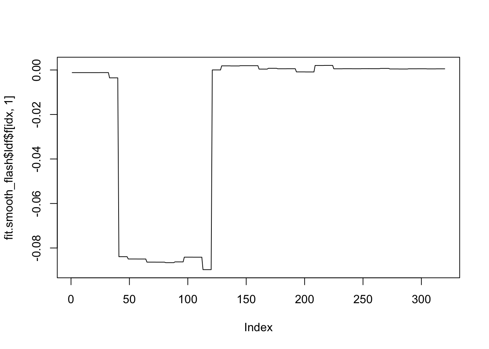
plot(fit.smooth_flash$ldf$f[idx,2],type='l')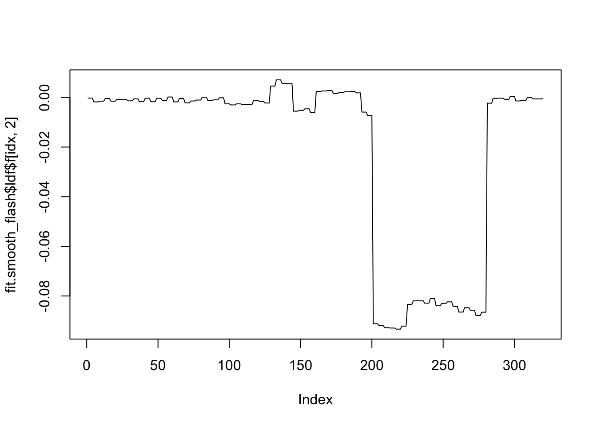
plot(fit.smooth_flash$ldf$f[idx,3],type='l')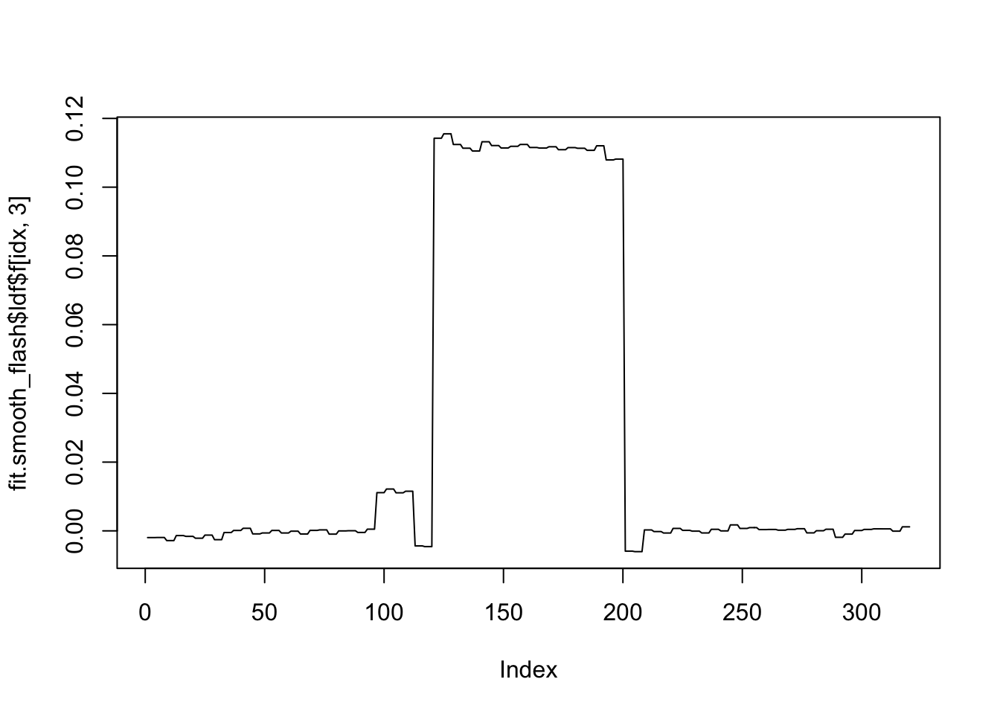
plot(fit.smooth_flash$ldf$f[idx,4],type='l')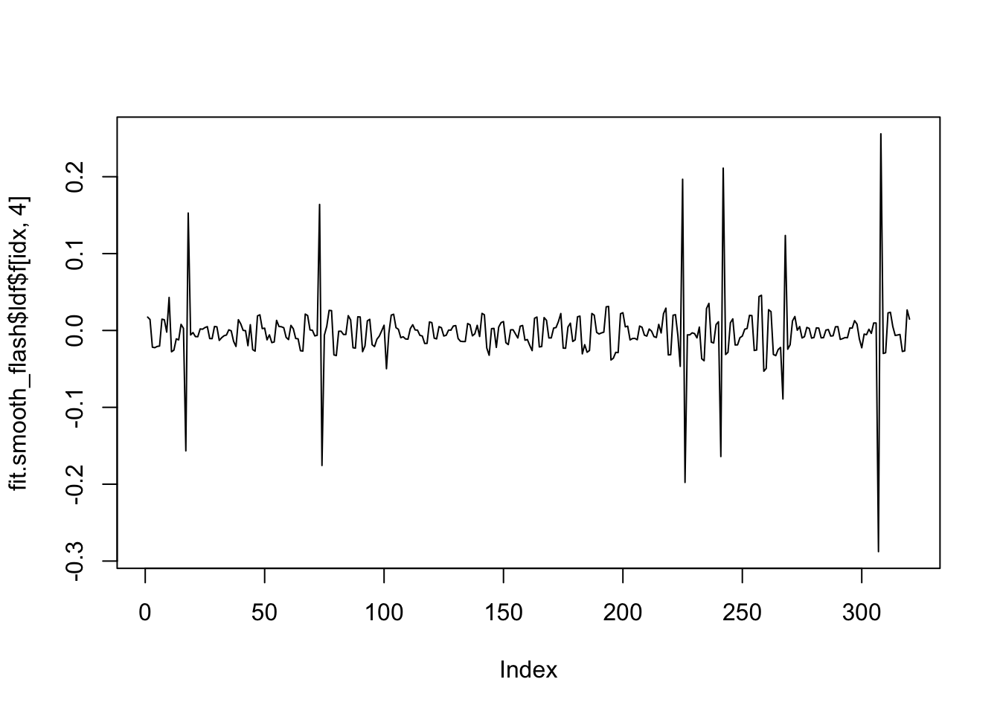
plot(fit.smooth_flash$ldf$f[idx,5],type='l')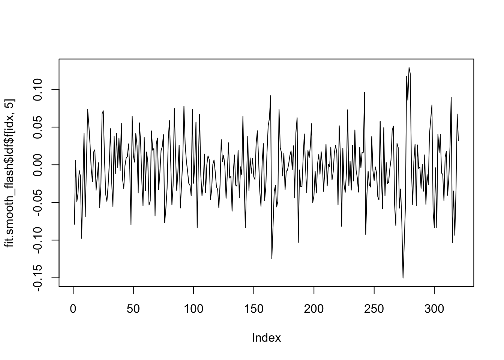
Now DWT funflash.
datax = funflash_set_data(X.e$x,reflect.data = FALSE,type='wavelet')
fit.dwt = funflash(datax,var.type = 'constant')[1] "Fitting dimension 1"
[1] "Iteration 1 : obj -47296.434"
[1] "Iteration 2 : obj -47292.519"
[1] "Iteration 3 : obj -47292.472"
[1] "Iteration 4 : obj -47292.47"
[1] "Performing nullcheck"
[1] "Deleting factor 1 decreases objective by 4934.154"
[1] "Fitting dimension 2"
[1] "Iteration 1 : obj -45488.043"
[1] "Iteration 2 : obj -45480.169"
[1] "Iteration 3 : obj -45480.082"
[1] "Iteration 4 : obj -45480.069"
[1] "Iteration 5 : obj -45480.067"
[1] "Performing nullcheck"
[1] "Deleting factor 2 decreases objective by 1812.402"
[1] "Fitting dimension 3"
[1] "Iteration 1 : obj -44741.386"
[1] "Iteration 2 : obj -44726.834"
[1] "Iteration 3 : obj -44726.764"
[1] "Iteration 4 : obj -44726.763"
[1] "Performing nullcheck"
[1] "Deleting factor 3 decreases objective by 753.304"
[1] "Fitting dimension 4"
[1] "Iteration 1 : obj -44742.788"
[1] "Iteration 2 : obj -44732.286"
[1] "Iteration 3 : obj -44731.031"
[1] "Iteration 4 : obj -44729.945"
[1] "Iteration 5 : obj -44728.999"
[1] "Iteration 6 : obj -44728.284"
[1] "Iteration 7 : obj -44727.632"
[1] "Iteration 8 : obj -44726.968"
[1] "Iteration 9 : obj -44726.265"
[1] "Iteration 10 : obj -44725.526"
[1] "Iteration 11 : obj -44724.788"
[1] "Iteration 12 : obj -44724.125"
[1] "Iteration 13 : obj -44723.547"
[1] "Iteration 14 : obj -44723.045"
[1] "Iteration 15 : obj -44722.607"
[1] "Iteration 16 : obj -44722.22"
[1] "Iteration 17 : obj -44721.878"
[1] "Iteration 18 : obj -44721.577"
[1] "Iteration 19 : obj -44721.313"
[1] "Iteration 20 : obj -44721.08"
[1] "Iteration 21 : obj -44720.873"
[1] "Iteration 22 : obj -44720.685"
[1] "Iteration 23 : obj -44720.512"
[1] "Iteration 24 : obj -44720.343"
[1] "Iteration 25 : obj -44720.176"
[1] "Iteration 26 : obj -44720.014"
[1] "Iteration 27 : obj -44719.843"
[1] "Iteration 28 : obj -44719.667"
[1] "Iteration 29 : obj -44719.495"
[1] "Iteration 30 : obj -44719.335"
[1] "Iteration 31 : obj -44719.191"
[1] "Iteration 32 : obj -44719.059"
[1] "Iteration 33 : obj -44718.937"
[1] "Iteration 34 : obj -44718.824"
[1] "Iteration 35 : obj -44718.718"
[1] "Iteration 36 : obj -44718.621"
[1] "Iteration 37 : obj -44718.53"
[1] "Iteration 38 : obj -44718.444"
[1] "Iteration 39 : obj -44718.358"
[1] "Iteration 40 : obj -44718.27"
[1] "Iteration 41 : obj -44718.178"
[1] "Iteration 42 : obj -44718.079"
[1] "Iteration 43 : obj -44717.974"
[1] "Iteration 44 : obj -44717.863"
[1] "Iteration 45 : obj -44717.749"
[1] "Iteration 46 : obj -44717.638"
[1] "Iteration 47 : obj -44717.534"
[1] "Iteration 48 : obj -44717.445"
[1] "Iteration 49 : obj -44717.372"
[1] "Iteration 50 : obj -44717.316"
[1] "Iteration 51 : obj -44717.279"
[1] "Iteration 52 : obj -44717.255"
[1] "Iteration 53 : obj -44717.239"
[1] "Iteration 54 : obj -44717.229"
[1] "Iteration 55 : obj -44717.223"
[1] "Performing nullcheck"
[1] "Deleting factor 4 decreases objective by 9.541"
[1] "Fitting dimension 5"
[1] "Iteration 1 : obj -44730.365"
[1] "Iteration 2 : obj -44720.13"
[1] "Iteration 3 : obj -44719.17"
[1] "Iteration 4 : obj -44718.552"
[1] "Iteration 5 : obj -44718.048"
[1] "Iteration 6 : obj -44717.607"
[1] "Iteration 7 : obj -44717.207"
[1] "Iteration 8 : obj -44716.819"
[1] "Iteration 9 : obj -44716.451"
[1] "Iteration 10 : obj -44716.158"
[1] "Iteration 11 : obj -44715.979"
[1] "Iteration 12 : obj -44715.892"
[1] "Iteration 13 : obj -44715.852"
[1] "Iteration 14 : obj -44715.833"
[1] "Iteration 15 : obj -44715.823"
[1] "Iteration 16 : obj -44715.817"
[1] "Performing nullcheck"
[1] "Deleting factor 5 decreases objective by 1.406"
[1] "Fitting dimension 6"
[1] "Iteration 1 : obj -44728.815"
[1] "Iteration 2 : obj -44714.717"
[1] "Iteration 3 : obj -44712.285"
[1] "Iteration 4 : obj -44711.129"
[1] "Iteration 5 : obj -44710.359"
[1] "Iteration 6 : obj -44709.807"
[1] "Iteration 7 : obj -44709.384"
[1] "Iteration 8 : obj -44709.061"
[1] "Iteration 9 : obj -44708.694"
[1] "Iteration 10 : obj -44707.932"
[1] "Iteration 11 : obj -44707.369"
[1] "Iteration 12 : obj -44706.817"
[1] "Iteration 13 : obj -44706.244"
[1] "Iteration 14 : obj -44705.628"
[1] "Iteration 15 : obj -44704.929"
[1] "Iteration 16 : obj -44704.077"
[1] "Iteration 17 : obj -44702.923"
[1] "Iteration 18 : obj -44701.436"
[1] "Iteration 19 : obj -44698.721"
[1] "Iteration 20 : obj -44697.817"
[1] "Iteration 21 : obj -44697.432"
[1] "Iteration 22 : obj -44697.138"
[1] "Iteration 23 : obj -44696.716"
[1] "Iteration 24 : obj -44696.251"
[1] "Iteration 25 : obj -44696.014"
[1] "Iteration 26 : obj -44695.936"
[1] "Iteration 27 : obj -44695.91"
[1] "Iteration 28 : obj -44695.901"
[1] "Performing nullcheck"
[1] "Deleting factor 6 decreases objective by 19.916"
[1] "Fitting dimension 7"
[1] "Iteration 1 : obj -44715.347"
[1] "Iteration 2 : obj -44702.648"
[1] "Iteration 3 : obj -44700.247"
[1] "Iteration 4 : obj -44698.4"
[1] "Iteration 5 : obj -44696.995"
[1] "Iteration 6 : obj -44696.002"
[1] "Iteration 7 : obj -44694.883"
[1] "Iteration 8 : obj -44694.42"
[1] "Iteration 9 : obj -44694.165"
[1] "Iteration 10 : obj -44694"
[1] "Iteration 11 : obj -44693.878"
[1] "Iteration 12 : obj -44693.776"
[1] "Iteration 13 : obj -44693.682"
[1] "Iteration 14 : obj -44693.59"
[1] "Iteration 15 : obj -44693.499"
[1] "Iteration 16 : obj -44693.41"
[1] "Iteration 17 : obj -44693.323"
[1] "Iteration 18 : obj -44693.241"
[1] "Iteration 19 : obj -44693.164"
[1] "Iteration 20 : obj -44693.091"
[1] "Iteration 21 : obj -44693.021"
[1] "Iteration 22 : obj -44692.954"
[1] "Iteration 23 : obj -44692.888"
[1] "Iteration 24 : obj -44692.822"
[1] "Iteration 25 : obj -44692.756"
[1] "Iteration 26 : obj -44692.69"
[1] "Iteration 27 : obj -44692.625"
[1] "Iteration 28 : obj -44692.562"
[1] "Iteration 29 : obj -44692.502"
[1] "Iteration 30 : obj -44692.445"
[1] "Iteration 31 : obj -44692.391"
[1] "Iteration 32 : obj -44692.342"
[1] "Iteration 33 : obj -44692.297"
[1] "Iteration 34 : obj -44692.248"
[1] "Iteration 35 : obj -44692.188"
[1] "Iteration 36 : obj -44692.111"
[1] "Iteration 37 : obj -44692.012"
[1] "Iteration 38 : obj -44691.887"
[1] "Iteration 39 : obj -44691.735"
[1] "Iteration 40 : obj -44691.556"
[1] "Iteration 41 : obj -44691.351"
[1] "Iteration 42 : obj -44691.124"
[1] "Iteration 43 : obj -44690.877"
[1] "Iteration 44 : obj -44690.614"
[1] "Iteration 45 : obj -44690.345"
[1] "Iteration 46 : obj -44690.084"
[1] "Iteration 47 : obj -44689.847"
[1] "Iteration 48 : obj -44689.65"
[1] "Iteration 49 : obj -44689.498"
[1] "Iteration 50 : obj -44689.387"
[1] "Iteration 51 : obj -44689.307"
[1] "Iteration 52 : obj -44689.248"
[1] "Iteration 53 : obj -44689.201"
[1] "Iteration 54 : obj -44689.162"
[1] "Iteration 55 : obj -44689.124"
[1] "Iteration 56 : obj -44689.083"
[1] "Iteration 57 : obj -44689.036"
[1] "Iteration 58 : obj -44688.971"
[1] "Iteration 59 : obj -44688.877"
[1] "Iteration 60 : obj -44688.727"
[1] "Iteration 61 : obj -44688.489"
[1] "Iteration 62 : obj -44688.115"
[1] "Iteration 63 : obj -44687.529"
[1] "Iteration 64 : obj -44686.476"
[1] "Iteration 65 : obj -44684.05"
[1] "Iteration 66 : obj -44680.699"
[1] "Iteration 67 : obj -44690.53"
[1] "An iteration decreased the objective"
[1] "Performing nullcheck"
[1] "Deleting factor 7 decreases objective by 5.371"
[1] "Fitting dimension 8"
[1] "Iteration 1 : obj -44711.021"
[1] "Iteration 2 : obj -44699.226"
[1] "Iteration 3 : obj -44697.9"
[1] "Iteration 4 : obj -44697.207"
[1] "Iteration 5 : obj -44696.692"
[1] "Iteration 6 : obj -44696.251"
[1] "Iteration 7 : obj -44695.825"
[1] "Iteration 8 : obj -44695.38"
[1] "Iteration 9 : obj -44694.953"
[1] "Iteration 10 : obj -44694.488"
[1] "Iteration 11 : obj -44693.941"
[1] "Iteration 12 : obj -44693.325"
[1] "Iteration 13 : obj -44692.737"
[1] "Iteration 14 : obj -44692.17"
[1] "Iteration 15 : obj -44691.577"
[1] "Iteration 16 : obj -44690.913"
[1] "Iteration 17 : obj -44690.089"
[1] "Iteration 18 : obj -44688.75"
[1] "Iteration 19 : obj -44685.81"
[1] "Iteration 20 : obj -44684.738"
[1] "Iteration 21 : obj -44684.56"
[1] "Iteration 22 : obj -44684.533"
[1] "Iteration 23 : obj -44684.528"
[1] "Performing nullcheck"
[1] "Deleting factor 8 decreases objective by 5.979"
[1] "Fitting dimension 9"
[1] "Iteration 1 : obj -44712.82"
[1] "Iteration 2 : obj -44700.391"
[1] "Iteration 3 : obj -44698.237"
[1] "Iteration 4 : obj -44696.137"
[1] "Iteration 5 : obj -44693.816"
[1] "Iteration 6 : obj -44691.272"
[1] "Iteration 7 : obj -44688.524"
[1] "Iteration 8 : obj -44684.846"
[1] "Iteration 9 : obj -44683.633"
[1] "Iteration 10 : obj -44682.856"
[1] "Iteration 11 : obj -44681.592"
[1] "Iteration 12 : obj -44681.368"
[1] "Iteration 13 : obj -44681.261"
[1] "Iteration 14 : obj -44681.192"
[1] "Iteration 15 : obj -44681.139"
[1] "Iteration 16 : obj -44681.098"
[1] "Iteration 17 : obj -44681.065"
[1] "Iteration 18 : obj -44681.039"
[1] "Iteration 19 : obj -44681.019"
[1] "Iteration 20 : obj -44681.004"
[1] "Iteration 21 : obj -44680.993"
[1] "Iteration 22 : obj -44680.984"
[1] "Performing nullcheck"
[1] "Deleting factor 9 decreases objective by 3.544"
[1] "Fitting dimension 10"
[1] "Iteration 1 : obj -44711.009"
[1] "Iteration 2 : obj -44698.475"
[1] "Iteration 3 : obj -44697.133"
[1] "Iteration 4 : obj -44696.406"
[1] "Iteration 5 : obj -44695.927"
[1] "Iteration 6 : obj -44695.519"
[1] "Iteration 7 : obj -44695.152"
[1] "Iteration 8 : obj -44694.812"
[1] "Iteration 9 : obj -44694.505"
[1] "Iteration 10 : obj -44694.233"
[1] "Iteration 11 : obj -44693.992"
[1] "Iteration 12 : obj -44693.774"
[1] "Iteration 13 : obj -44693.57"
[1] "Iteration 14 : obj -44693.355"
[1] "Iteration 15 : obj -44693.104"
[1] "Iteration 16 : obj -44692.806"
[1] "Iteration 17 : obj -44692.552"
[1] "Iteration 18 : obj -44691.768"
[1] "Iteration 19 : obj -44691.448"
[1] "Iteration 20 : obj -44691.215"
[1] "Iteration 21 : obj -44690.962"
[1] "Iteration 22 : obj -44690.637"
[1] "Iteration 23 : obj -44690.232"
[1] "Iteration 24 : obj -44689.74"
[1] "Iteration 25 : obj -44689.222"
[1] "Iteration 26 : obj -44688.712"
[1] "Iteration 27 : obj -44688.157"
[1] "Iteration 28 : obj -44687.46"
[1] "Iteration 29 : obj -44686.594"
[1] "Iteration 30 : obj -44685.761"
[1] "Iteration 31 : obj -44685.241"
[1] "Iteration 32 : obj -44685.022"
[1] "Iteration 33 : obj -44684.936"
[1] "Iteration 34 : obj -44684.895"
[1] "Iteration 35 : obj -44684.872"
[1] "Iteration 36 : obj -44684.858"
[1] "Iteration 37 : obj -44684.849"
[1] "Performing nullcheck"
[1] "Deleting factor 10 increases objective by 3.865"fit.dwt$nfactors[1] 9plot(fit.dwt$ldf$f[idx,1],type='l')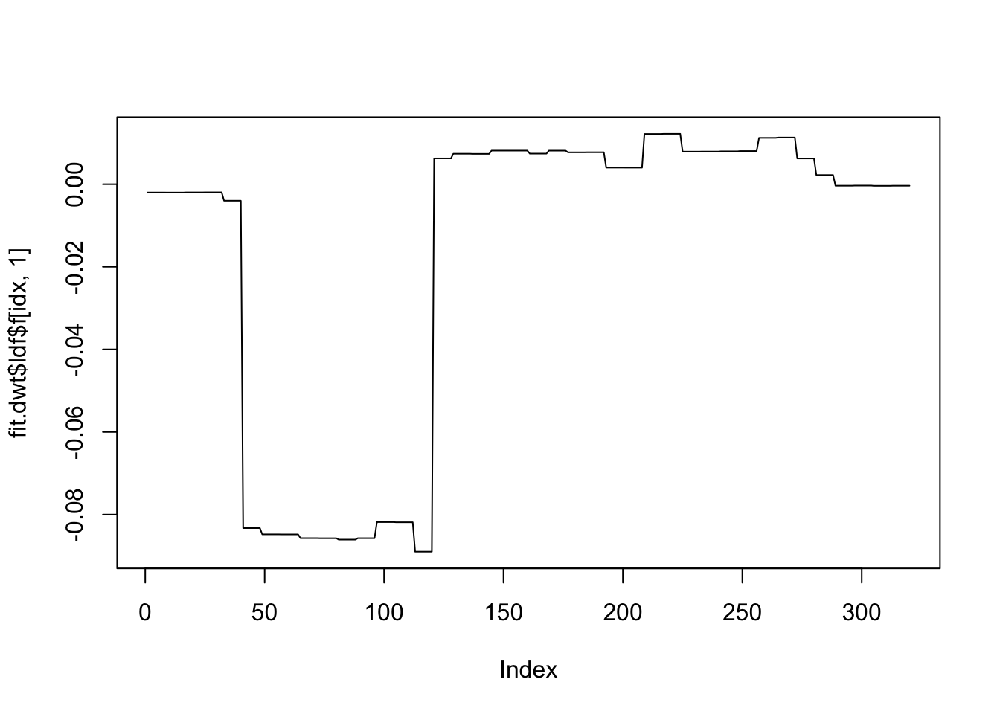
plot(fit.dwt$ldf$f[idx,2],type='l')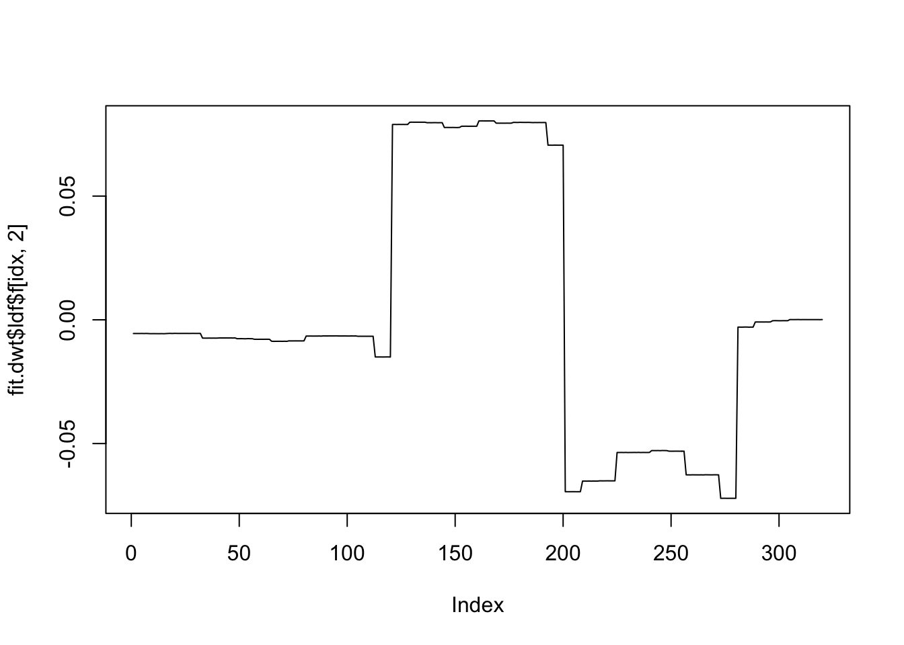
plot(fit.dwt$ldf$f[idx,3],type='l')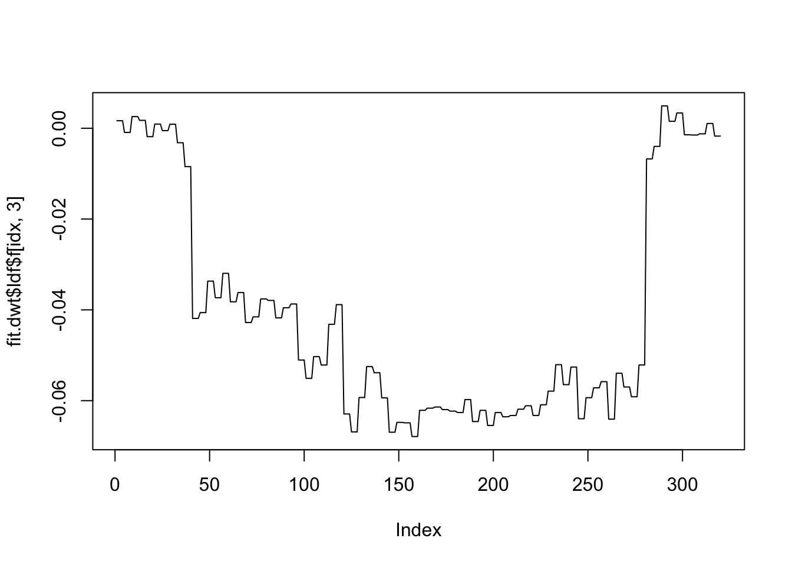
plot(fit.dwt$ldf$f[idx,4],type='l')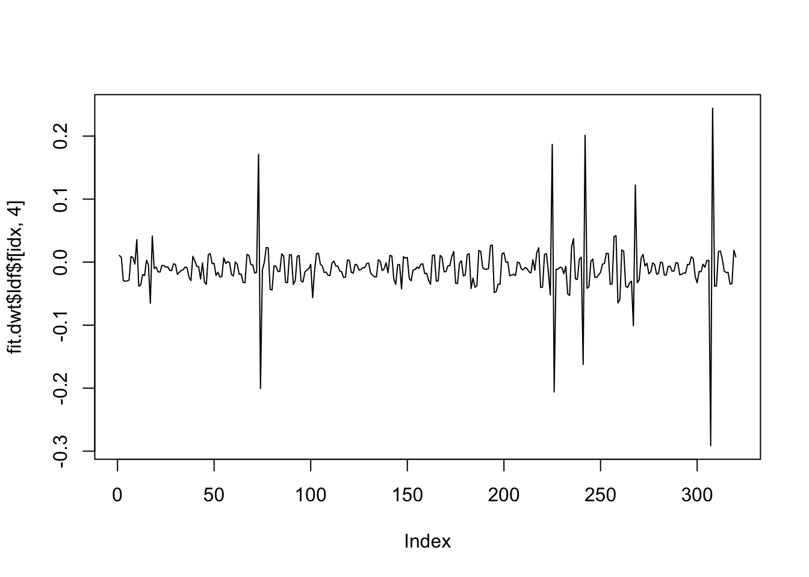
plot(fit.dwt$ldf$f[idx,5],type='l')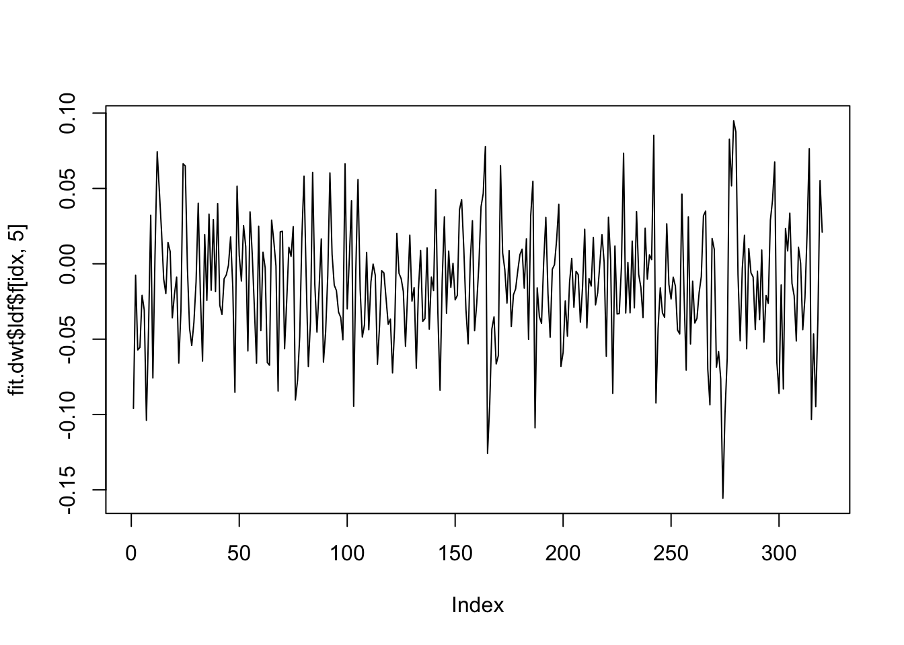
sessionInfo()R version 4.2.0 (2022-04-22)
Platform: x86_64-apple-darwin17.0 (64-bit)
Running under: macOS Big Sur/Monterey 10.16
Matrix products: default
BLAS: /Library/Frameworks/R.framework/Versions/4.2/Resources/lib/libRblas.0.dylib
LAPACK: /Library/Frameworks/R.framework/Versions/4.2/Resources/lib/libRlapack.dylib
locale:
[1] en_US.UTF-8/en_US.UTF-8/en_US.UTF-8/C/en_US.UTF-8/en_US.UTF-8
attached base packages:
[1] stats graphics grDevices utils datasets methods base
other attached packages:
[1] funflash_0.1.0 flashr_0.6-8 workflowr_1.7.0
loaded via a namespace (and not attached):
[1] Rcpp_1.0.8.3 horseshoe_0.2.0 invgamma_1.1 lattice_0.20-45
[5] getPass_0.2-2 ps_1.7.0 assertthat_0.2.1 rprojroot_2.0.3
[9] digest_0.6.29 utf8_1.2.2 truncnorm_1.0-8 R6_2.5.1
[13] plyr_1.8.7 evaluate_0.15 httr_1.4.2 ggplot2_3.3.5
[17] highr_0.9 pillar_1.7.0 rlang_1.0.2 wavethresh_4.6.8
[21] data.table_1.14.2 rstudioapi_0.13 ebnm_1.0-9 irlba_2.3.5
[25] whisker_0.4 callr_3.7.0 jquerylib_0.1.4 Matrix_1.4-1
[29] rmarkdown_2.13 splines_4.2.0 smashr_1.2-9 stringr_1.4.0
[33] munsell_0.5.0 mixsqp_0.3-47 compiler_4.2.0 httpuv_1.6.5
[37] xfun_0.30 pkgconfig_2.0.3 SQUAREM_2021.1 htmltools_0.5.2
[41] tidyselect_1.1.2 tibble_3.1.6 fansi_1.0.3 crayon_1.5.1
[45] dplyr_1.0.8 later_1.3.0 MASS_7.3-56 bitops_1.0-7
[49] grid_4.2.0 jsonlite_1.8.0 gtable_0.3.0 lifecycle_1.0.1
[53] DBI_1.1.2 git2r_0.30.1 magrittr_2.0.3 scales_1.2.0
[57] cli_3.3.0 stringi_1.7.6 reshape2_1.4.4 fs_1.5.2
[61] promises_1.2.0.1 bslib_0.3.1 ellipsis_0.3.2 vctrs_0.4.1
[65] generics_0.1.2 trust_0.1-8 tools_4.2.0 glue_1.6.2
[69] softImpute_1.4-1 purrr_0.3.4 processx_3.5.3 fastmap_1.1.0
[73] yaml_2.3.5 colorspace_2.0-3 ashr_2.2-54 caTools_1.18.2
[77] deconvolveR_1.2-1 knitr_1.38 sass_0.4.1